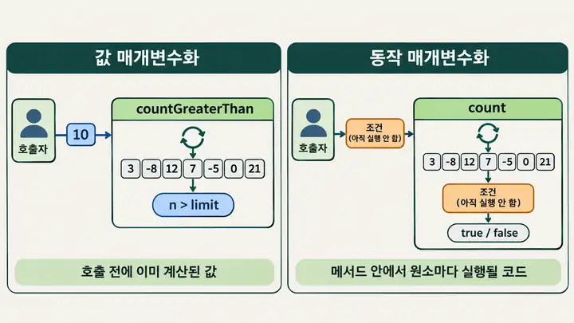
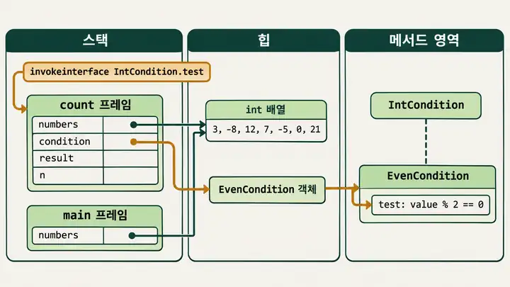
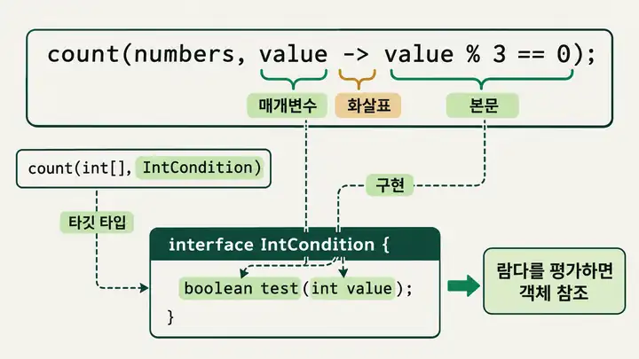
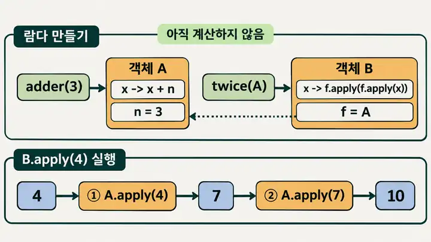

자바 고급 3편 / 01회
람다가 필요한 이유와 람다
메서드에 값이 아니라 코드를 넘겨야 하는 순간에서 출발해 전략 객체, 익명 클래스, 람다로 이어지는 길을 바이트코드와 메모리 그림으로 따라가고, 람다의 문법·타깃 타입·시그니처 규칙을 언어 명세로 정리한다.
오늘 끝나면 할 수 있는 것
- 값 매개변수화와 동작 매개변수화를 구분하고, 바뀌는 부분이 "메서드 안에서만 알 수 있는 데이터에 의존하는 계산"일 때 왜 값으로 넘길 수 없는지 설명할 수 있다.
- 인터페이스 구현 객체로 코드를 넘길 때 스택·힙·메서드 영역에 무엇이 생기고,
invokeinterface가 실제 실행할 코드를 어떻게 고르는지 그림으로 그릴 수 있다. - 함수와 메서드의 차이를 숨은 매개변수
this(javap의args_size)로 보여 주고, 자바가 함수 타입 대신 함수형 인터페이스를 택한 이유를 말할 수 있다. - 람다가 어느 문맥에서만 쓸 수 있는지, 함수형 인터페이스의 조건이 무엇인지, 람다 본문이 함수 타입과 맞는지(매개변수·반환·검사 예외)를 JLS 규칙으로 판정하고 javac 오류 문구를 예측할 수 있다.
- 람다를 변수·인자·반환값으로 주고받는 고차 함수를 직접 작성하고, 반환된 람다가 바깥 변수를 어떻게 붙잡아 두는지 실행 순서대로 추적할 수 있다.
핵심 강의 → 핵심 요약 → 실무 재판단 → 적용 연습 → 이해 확인
01 핵심 강의
이 강의의 차례 · 소제목 16개
- 이 회차의 질문: 메서드에 "코드"를 넘길 수 있는가
- 람다가 필요한 이유 1: 값 매개변수화
- 람다가 필요한 이유 2: 바뀌는 것이 값이 아니라 코드일 때
- 람다가 필요한 이유 3: 코드를 객체에 담아 보내기
- 함수 vs 메서드
- 람다 시작: 익명 클래스에서 형식을 걷어 내기
- 람다 정의: 이름 없는 함수, 스스로 정한 타입이 없는 식
- 함수형 인터페이스: 람다를 받을 수 있는 인터페이스
- 람다와 시그니처: 본문이 함수 타입에 맞는가
- 람다와 생략: 무엇을 언제 지울 수 있는가
- 한 층 아래: javac는 람다를 어떤 순서로 검사하고 번역하는가
- 람다의 전달: 람다는 값이다
- 고차 함수: 함수를 받고 함수를 돌려주는 함수
- 한 층 아래: 여러 람다가 지나가는 호출 지점과 HotSpot의 타입 프로파일
- 흔한 오해와 함정
- 정리: 다음 회차로 이어지는 것
이 회차의 질문: 메서드에 "코드"를 넘길 수 있는가
자바 입문편부터 지금까지 우리는 메서드에 값을 넘겨 왔다. 정수, 문자열, 배열, 객체 참조처럼 무엇이든 "값"이라면 매개변수로 받을 수 있다. 그런데 프로그램을 쓰다 보면 바뀌는 부분이 값이 아닌 경우를 자주 만난다. 반복문의 뼈대는 같은데 반복할 때마다 적용할 조건이 다르거나, 앞뒤 준비와 정리는 같은데 가운데에서 할 일이 다르다. 이때 바뀌는 것은 숫자 하나가 아니라 코드 조각이다. 메서드가 코드 조각을 매개변수로 받을 수 있다면 중복을 깔끔하게 걷어 낼 수 있다.
자바는 오랫동안 이 문제를 객체로 풀었다. 코드를 어떤 클래스의 메서드 안에 넣고, 그 클래스의 객체를 넘기는 방법이다. 스레드를 만들 때 Runnable 구현 객체를 넘긴 것(자바 고급 1편), 스프링의 JdbcTemplate이나 TransactionTemplate에 콜백 객체를 넘기는 템플릿 콜백 패턴이 모두 그 예다. 방법 자체는 잘 동작했지만 코드 한 줄을 넘기려고 클래스 선언 몇 줄을 써야 했다. 자바 8에 들어온 람다 표현식(lambda expression)은 이 형식을 걷어 내고 "넘기고 싶은 코드"만 적게 해 준다.
이 회차는 그 과정을 처음부터 다시 밟는다. 먼저 값 매개변수화로 해결되는 중복과 해결되지 않는 중복을 나란히 놓고, 해결되지 않는 쪽을 전략 객체와 익명 클래스로 풀면서 JVM 안에서 실제로 무엇이 오가는지 확인한다. 그다음 함수와 메서드가 어떻게 다른지, 자바가 왜 "함수 타입"을 따로 만들지 않았는지 짚는다. 후반부에서는 람다를 정의하는 언어 명세(Java Language Specification, JLS)의 규칙, 곧 함수형 인터페이스, 람다와 시그니처, 생략 규칙, 람다의 전달, 고차 함수를 차례로 정리한다. 표준 함수형 인터페이스(java.util.function)는 2회, 람다로 필터·맵 같은 도구를 만드는 일은 3회, 익명 클래스와의 차이와 메서드 참조, 그리고 invokedynamic의 내부는 4회에서 깊게 다룬다.
실습 환경 구성
이 회차의 예제는 JDK 21 하나만 있으면 따라 할 수 있다. 빈 폴더에 소스 파일을 만들고 javac로 컴파일한 뒤 java로 실행한다. IntelliJ IDEA나 Gradle 프로젝트에서 실행해도 결과는 같지만, 이 회차는 컴파일 결과(클래스 파일과 바이트코드)를 직접 들여다보므로 명령줄 도구를 함께 쓰는 편이 좋다. 바이트코드는 JDK에 들어 있는 javap로 본다. javap -c -p 클래스이름은 private 메서드까지 포함해 메서드별 바이트코드를 출력하고, -v를 붙이면 상수 풀과 args_size 같은 세부 정보까지 출력한다.
본문에 실은 실행 결과, javac 오류 문구, javap 출력은 모두 macOS에서 Temurin JDK 21.0.13으로 직접 실행해 확인한 것이다. 오류 문구는 javac 구현의 출력이라 JDK 버전에 따라 표현이 조금 달라질 수 있지만, 오류가 나는지 아닌지는 JLS가 정한다. 실행할 때마다 달라지는 값(런타임에 생성된 클래스의 이름에 붙는 주소 등)은 해당 위치에서 따로 밝힌다.
java -version # openjdk version "21.0.13" ... Temurin-21.0.13+9
javac CountDemo.java # 같은 파일에 선언한 클래스마다 .class 파일이 생긴다
java CountDemo # main이 있는 클래스를 실행
javap -c -p CountDemo # 바이트코드 보기 (-v: 상세 정보)람다가 필요한 이유 1: 값 매개변수화
출발점은 익숙한 문제다. 정수 배열에서 조건을 만족하는 원소가 몇 개인지 세는 메서드를 생각해 보자. 처음에는 "10보다 큰 수의 개수"가 필요했고, 얼마 뒤 "0보다 큰 수의 개수"가 필요해졌다고 하자. 가장 단순한 방법은 메서드를 하나 더 복사하는 것이다.
static int countGreaterThan10(int[] numbers) {
int result = 0;
for (int n : numbers) {
if (n > 10) result++;
}
return result;
}
static int countGreaterThan0(int[] numbers) {
int result = 0;
for (int n : numbers) {
if (n > 0) result++;
}
return result;
}두 메서드를 나란히 놓으면 다른 곳은 비교 대상인 리터럴 10과 0뿐이다. 이렇게 바뀌는 부분이 값이면 해결책은 자바 입문편에서 배운 그대로다. 바뀌는 값을 매개변수로 빼내고, 바뀌지 않는 부분은 메서드 본문에 남긴다. 이것을 값 매개변수화(value parameterization)라고 부를 수 있다. 메서드 본문은 "고정된 알고리즘"이 되고, 매개변수는 "호출하는 쪽이 정하는 부분"이 된다.
public class ValueParam {
static int countGreaterThan(int[] numbers, int limit) {
int result = 0;
for (int n : numbers) {
if (n > limit) result++;
}
return result;
}
public static void main(String[] args) {
int[] numbers = {3, -8, 12, 7, -5, 0, 21};
System.out.println(countGreaterThan(numbers, 10));
System.out.println(countGreaterThan(numbers, 0));
System.out.println(countGreaterThan(numbers, -6));
}
}2
4
6결과를 손으로 확인해 보자. 배열은 {3, -8, 12, 7, -5, 0, 21}이다. 10보다 큰 수는 12와 21이라 2개, 0보다 큰 수는 3, 12, 7, 21이라 4개, -6보다 큰 수는 -8만 빼고 모두라 6개다. 호출할 때 일어나는 일도 단순하다. countGreaterThan(numbers, 10)을 실행하면 JVM은 새 스택 프레임을 만들고, 지역 변수 0번 칸에 배열 참조를, 1번 칸에 정수 10을 복사해 넣는다. 자바의 인자 전달은 언제나 값의 복사이므로 limit은 호출하는 쪽의 리터럴 10과 아무 관계 없는 독립된 칸이다. 메서드 안에서 그 칸의 값을 읽어 매번 비교에 쓴다.
값 매개변수화가 통하는 조건을 분명히 해 두자. 호출하는 쪽이 호출하기 전에 그 값을 알고 있어야 한다. 10이나 0은 호출 시점에 이미 정해진 수라서 복사해 넘길 수 있다. 다음 절에서 볼 문제는 이 조건이 깨지는 경우다.
람다가 필요한 이유 2: 바뀌는 것이 값이 아니라 코드일 때
이번에는 "짝수의 개수"와 "음수의 개수"가 필요하다고 하자. 메서드 두 개를 쓰면 이번에도 거의 같은 코드가 나온다. 다른 곳은 if의 조건식, 곧 n % 2 == 0과 n < 0뿐이다. 그런데 이 차이는 앞 절과 성질이 다르다. 앞 절에서 바뀐 것은 비교 대상인 숫자 하나였지만, 여기서 바뀌는 것은 계산 자체다. 짝수 조건은 나머지 연산을 하고 0과 비교하며, 음수 조건은 0과 크기를 비교한다. 연산의 종류와 순서가 다르다.
더 중요한 점이 있다. 이 계산에는 n이 들어 있고, n은 메서드 안에서 반복문이 돌 때에야 하나씩 정해진다. 호출하는 쪽은 n을 모르므로 n % 2 == 0의 결과를 미리 계산해 넘길 수 없다. 넘겨야 하는 것은 계산 결과가 아니라 "나중에 n이 주어지면 이렇게 계산하라"는 지시다. 값은 이미 계산이 끝난 결과이고, 코드는 아직 실행하지 않은 계산이다. 바뀌는 부분이 메서드 안에서만 알 수 있는 데이터에 의존한다면, 그 부분은 실행을 미룬 채로, 즉 코드 상태로 넘겨야 한다.
자바 입문편의 도구만으로 이 문제를 풀어 보면 대개 아래와 같은 모양이 나온다. 어떤 조건을 쓸지 문자열(또는 enum)로 받고, 메서드 안에서 분기하는 것이다.
static int count(int[] numbers, String mode) {
int result = 0;
for (int n : numbers) {
boolean match = switch (mode) {
case "EVEN" -> n % 2 == 0;
case "NEGATIVE" -> n < 0;
default -> throw new IllegalArgumentException(mode);
};
if (match) result++;
}
return result;
}
// count(numbers, "EVEN") → 3, count(numbers, "NEGATIVE") → 2동작은 한다. 짝수는 -8, 12, 0으로 3개, 음수는 -8, -5로 2개다. 하지만 이 방법은 문제를 해결했다기보다 옮겨 놓았을 뿐이다. 첫째, 가능한 조건의 목록이 count 안에 닫혀 있다. "3의 배수"가 필요해지면 호출하는 쪽이 아니라 count를 고쳐야 한다. 세는 알고리즘과 조건 목록이라는, 서로 다른 이유로 바뀌는 두 가지가 한 메서드에 묶여 있는 것이다. 둘째, count를 쓰는 모든 코드가 count가 아는 조건 안에서만 일할 수 있다. 라이브러리로 배포한 메서드라면 사용자가 원하는 조건을 추가할 방법이 아예 없다. 셋째, 문자열 "EVNE"처럼 오타를 내도 컴파일러는 잡아 주지 못하고 실행 중에 예외가 난다.
원하는 구조는 반대다. 무엇을 셀지는 호출하는 쪽이 정하고, 언제 어떻게 적용할지(배열을 한 번 돌며 원소마다 적용하고 참이면 더한다)는 count가 정한다. 동작(behavior) 자체를 매개변수로 받는 이 방식을 동작 매개변수화(behavior parameterization)라고 부른다. 이 권 전체를 관통하는 생각이다. 스트림의 filter, map, sorted는 모두 "반복하고 모으는 일"은 라이브러리가 하고 "원소마다 할 일"은 호출하는 쪽이 넘기는 구조다.

람다가 필요한 이유 3: 코드를 객체에 담아 보내기
메서드의 매개변수에 "코드"를 받으려면 그 매개변수의 타입이 있어야 한다. 그런데 자바에는 코드 조각 그 자체를 나타내는 타입이 없다. 자바 가상 머신 명세(JVMS) §2.4는 참조 타입을 이렇게 나열한다. "There are three kinds of reference types: class types, array types, and interface types." 기본형 여덟 가지와 이 세 종류의 참조형이 전부이고, 함수나 코드 블록을 가리키는 타입은 없다. 지역 변수 칸, 필드, 매개변수, 반환값으로 오갈 수 있는 것은 이 범위 안의 값뿐이다.
그래서 자바가 택한 길은 "코드를 메서드로 가진 객체"를 넘기는 것이다. 먼저 조건의 모양을 인터페이스로 정한다. 정수 하나를 받아 참/거짓을 돌려주는 메서드 하나다. 그리고 조건마다 이 인터페이스를 구현한 클래스를 만든다. count는 인터페이스 타입의 매개변수를 받아, 원소마다 그 객체의 메서드를 호출한다.
interface IntCondition {
boolean test(int value);
}
class EvenCondition implements IntCondition {
@Override
public boolean test(int value) {
return value % 2 == 0;
}
}
class NegativeCondition implements IntCondition {
@Override
public boolean test(int value) {
return value < 0;
}
}
public class CountDemo {
static int count(int[] numbers, IntCondition condition) {
int result = 0;
for (int n : numbers) {
if (condition.test(n)) {
result++;
}
}
return result;
}
public static void main(String[] args) {
int[] numbers = {3, -8, 12, 7, -5, 0, 21};
System.out.println("짝수: " + count(numbers, new EvenCondition()));
System.out.println("음수: " + count(numbers, new NegativeCondition()));
System.out.println("3의 배수: " + count(numbers, new IntCondition() {
@Override
public boolean test(int value) {
return value % 3 == 0;
}
}));
System.out.println("10 초과: " + count(numbers, value -> value > 10));
}
}짝수: 3
음수: 2
3의 배수: 4
10 초과: 2세 번째 줄의 3의 배수는 3, 12, 0, 21로 4개다(0도 3으로 나누어떨어진다). 네 번째 줄은 아직 설명하지 않은 람다로 쓴 것인데, 앞의 세 줄과 같은 일을 한다는 것만 눈여겨 두자. 이제 count는 어떤 조건이 들어올지 전혀 모른다. 아는 것은 "IntCondition 타입의 객체가 오고, 그 객체에 test(int)를 호출하면 boolean이 돌아온다"는 약속뿐이다. 새 조건이 필요하면 count를 고치지 않고 새 구현 객체를 만들어 넘기면 된다. 스프링 핵심 원리 고급편에서 본 전략 패턴(strategy pattern) 그대로다. count가 문맥(context)이고 IntCondition이 전략이다.
JVM 안에서 일어나는 일: 스택, 힙, 메서드 영역
count(numbers, new EvenCondition()) 한 줄이 실행되는 과정을 메모리 관점에서 따라가 보자. 먼저 new EvenCondition()이 힙에 객체를 하나 만든다. EvenCondition에는 필드가 없으므로 이 객체는 객체 헤더만 가진 작은 객체다. HotSpot에서는 객체 헤더 안에 그 객체의 클래스 정보를 가리키는 포인터가 있고, 클래스 정보에는 test 메서드의 바이트코드가 연결되어 있다. 다음으로 count를 호출하면서 새 프레임이 만들어지고, 지역 변수 칸에 배열 참조와 방금 만든 객체의 참조가 복사된다. 넘어간 것은 코드가 아니라 객체 참조 하나다.
스택 (main 스레드) 힙 메서드 영역 (클래스 정보)
┌─ count 프레임 ───────────────────┐
│ 0 numbers ─────────────────────┼──▶ int[7] {3,-8,12,7,-5,0,21}
│ 1 condition ─────────────────────┼──▶ EvenCondition 객체 ─(헤더)─▶ class EvenCondition
│ 2 result (0 → 1 → 2 → 3) │ 필드 없음 test(I)Z : value % 2 == 0
│ 3 (배열 사본) 4 (길이) 5 (인덱스) │ implements IntCondition
│ 6 n (현재 원소) │ interface IntCondition
└──────────────────────────────────┘ test(I)Z : abstract
┌─ main 프레임 ────────────────────┐
│ 0 args 1 numbers ──────────────┼──▶ (위와 같은 배열)
└──────────────────────────────────┘
그림의 3~5번 칸은 향상된 for 문을 javac가 풀어 쓰면서 만든 숨은 지역 변수다. 실제 바이트코드를 보면 이 구조가 그대로 드러난다. javap -c -p CountDemo로 본 count의 바이트코드 중 반복문 부분은 다음과 같다.
static int count(int[], IntCondition);
Code:
0: iconst_0
1: istore_2 // result = 0
2: aload_0
3: astore_3 // 배열 사본
4: aload_3
5: arraylength
6: istore 4 // 길이
8: iconst_0
9: istore 5 // 인덱스 i = 0
11: iload 5
13: iload 4
15: if_icmpge 44 // i >= 길이 이면 반복 끝
18: aload_3
19: iload 5
21: iaload
22: istore 6 // n = 배열[i]
24: aload_1 // condition 참조를 스택에
25: iload 6 // n을 스택에
27: invokeinterface #7, 2 // InterfaceMethod IntCondition.test:(I)Z
32: ifeq 38 // 결과가 false(0)면 증가를 건너뜀
35: iinc 2, 1 // result++
38: iinc 5, 1 // i++
41: goto 11
44: iload_2
45: ireturn핵심은 27번의 invokeinterface 한 줄이다(주석은 설명을 위해 덧붙였다). 이 명령어에 적혀 있는 것은 "IntCondition 인터페이스의 test:(I)Z를 호출하라"는 정보뿐이고, EvenCondition이라는 이름은 어디에도 없다. 뒤의 숫자 2는 넘기는 인자의 칸 수로, 수신 객체 참조(condition)와 int 하나를 합친 값이다. 실행 시점에 JVM은 피연산자 스택에 놓인 수신 객체의 실제 클래스를 보고, 그 클래스에서 test(I)Z의 구현을 골라 실행한다(JVMS §6.5 invokeinterface의 메서드 선택 규칙). 같은 바이트코드가 어떤 호출에서는 짝수 판정을, 어떤 호출에서는 음수 판정을 실행하는 이유가 여기에 있다. 자바 기본편에서 배운 다형성과 메서드 오버라이딩이 동작 매개변수화의 실제 기계 장치다.

익명 클래스: 이름 없는 전략
조건 하나를 쓰려고 매번 이름 있는 클래스를 선언하는 것은 번거롭다. 한 번만 쓸 조건이라면 클래스 이름조차 필요 없다. 자바는 오래전부터 이런 경우를 위해 익명 클래스(anonymous class)를 제공했다. 예제의 세 번째 호출처럼 new IntCondition() { ... }라고 쓰면 인터페이스를 구현하는 이름 없는 클래스를 선언하는 동시에 그 객체를 하나 만든다. 이름은 없어도 클래스는 클래스다. 컴파일하면 CountDemo$1.class라는 별도의 클래스 파일이 생기고, 바이트코드에는 new #42 // class CountDemo$1처럼 그 클래스의 객체를 만드는 명령이 들어간다. 위 예제를 컴파일한 폴더에는 다음 파일이 생긴다.
CountDemo$1.class ← 익명 클래스 (3의 배수 조건)
CountDemo.class ← 람다 본문은 이 안의 private static 메서드가 된다
EvenCondition.class
IntCondition.class
NegativeCondition.class람다로 쓴 네 번째 조건에 대해서는 별도의 클래스 파일이 생기지 않았다는 점이 눈에 띈다. 이 차이가 어디서 오는지, 람다의 객체는 언제 어떤 클래스로 만들어지는지는 4회에서 자세히 본다. 여기서는 익명 클래스가 해결하지 못한 문제에 집중하자. 익명 클래스로 쓴 3의 배수 조건은 다섯 줄이지만, 그중 우리가 정말 말하고 싶은 것은 value % 3 == 0 하나다. new IntCondition(), @Override, public boolean test(int value), 중괄호와 return은 모두 컴파일러가 이미 알 수 있는 정보를 되풀이할 뿐이다. 람다 설계 문서인 「State of the Lambda」(Brian Goetz, 2013)는 익명 클래스의 가장 큰 문제로 이 부피를 꼽고("The biggest pain point for anonymous classes is bulkiness"), 핵심 한 줄을 위해 여러 줄을 차지하는 것을 "수직 문제(vertical problem)"라고 불렀다.
| 방법 | 호출하는 쪽이 쓰는 코드 | 컴파일 결과 | 한계 |
|---|---|---|---|
| 값 매개변수 | countGreaterThan(numbers, 10) | 값 복사 | 계산의 종류는 바꿀 수 없다 |
| 모드 문자열 + 분기 | count(numbers, "EVEN") | 값 복사 | 조건 목록이 메서드 안에 닫혀 있다 |
| 이름 있는 구현 클래스 | count(numbers, new EvenCondition()) | 클래스 파일 1개 + 객체 | 조건마다 클래스 선언 |
| 익명 클래스 | count(numbers, new IntCondition() {...}) | CountDemo$1.class + 객체 | 핵심 한 줄에 형식 여러 줄 |
| 람다 | count(numbers, value -> value > 10) | private 메서드 + 실행 중 생성되는 객체 | 함수형 인터페이스가 있어야 한다 |
함수 vs 메서드
람다를 흔히 "익명 함수(anonymous function)"라고 부른다. 그렇다면 자바에서 함수와 메서드는 무엇이 다른가. 수학에서 함수는 입력을 출력에 대응시키는 규칙이다. f(x) = 2x는 어떤 객체에도 속하지 않고, 같은 입력에는 언제나 같은 출력을 낸다. 프로그래밍 언어에서 함수라고 하면 대개 이름이 붙은 코드 묶음으로서 인자를 받아 결과를 돌려주는 것을 말한다. C 언어의 함수처럼 어떤 클래스에도 속하지 않고 독립적으로 존재하며, 함수의 이름이나 주소를 다른 함수에 넘길 수 있는 언어도 많다.
메서드(method)는 클래스에 속한 함수다. 자바의 모든 실행 코드는 클래스나 인터페이스 안의 메서드로만 존재한다. 그중 인스턴스 메서드는 특정 객체에 대해 호출되며, 그 객체를 this로 참조한다. JVM 수준에서 보면 this는 특별한 마법이 아니라 숨은 첫 번째 매개변수다. JVMS §2.6.1은 "On instance method invocation, local variable 0 is always used to pass a reference to the object on which the instance method is being invoked"라고 정한다. 직접 확인해 보자.
public class Methods {
int instanceMethod(int a) { return a; }
static int staticMethod(int a) { return a; }
} int instanceMethod(int);
descriptor: (I)I
flags: (0x0000)
Code:
stack=1, locals=2, args_size=2
static int staticMethod(int);
descriptor: (I)I
flags: (0x0008) ACC_STATIC
Code:
stack=1, locals=1, args_size=1두 메서드는 소스에서 매개변수가 하나씩이고, 메서드 서술자(descriptor)도 똑같이 (I)I다. 그런데 args_size는 인스턴스 메서드가 2, 정적 메서드가 1이다. 인스턴스 메서드에는 0번 칸에 this가, 1번 칸에 a가 들어간다. 즉 인스턴스 메서드는 "수신 객체를 숨은 첫 인자로 받는 함수"이고, 정적 메서드는 그 숨은 인자가 없어 수학적 함수에 가장 가깝다. 정적 메서드도 클래스라는 이름 공간 안에 있고 클래스 이름으로 호출된다는 점에서는 여전히 메서드다.
함수와 메서드의 가장 큰 실무적 차이는 값으로 다룰 수 있는가다. 함수를 값으로 다루는 언어에서는 함수를 변수에 넣고, 다른 함수에 넘기고, 함수에서 돌려줄 수 있다. 자바의 메서드는 그럴 수 없다. 메서드 이름을 값처럼 쓰면 컴파일러는 그것을 변수 이름으로 해석하려다 실패한다.
public class A {
static boolean isEven(int v) { return v % 2 == 0; }
void m() { Object f = isEven; } // 컴파일 오류
}A.java:3: error: cannot find symbol
void m() { Object f = isEven; }
^
symbol: variable isEven
location: class A오류 문구가 "variable isEven"을 찾지 못했다고 말하는 데 주목하자. 괄호 없는 이름이 식 자리에 오면 자바는 그것을 변수(또는 필드)로 찾는다. 메서드는 값의 세계에 없다. 메서드를 값처럼 가리키는 문법인 메서드 참조(A::isEven)는 자바 8에서 람다와 함께 들어왔고 4회에서 다룬다. 그러나 메서드 참조 역시 "메서드 그 자체"라는 새로운 종류의 값을 만들지는 않는다는 점이 이 회차의 결론과 이어진다.
자바는 왜 함수 타입을 만들지 않았나
람다를 도입하면서 자바 설계자들은 (int) -> boolean 같은 함수 타입(function type)을 언어에 추가하는 방안도 검토했다. 「State of the Lambda」는 이를 검토했지만 "적어도 지금은" 받아들이지 않았다고 적고, 이유로 다음을 든다. 타입 시스템을 복잡하게 만들고 구조적 타입과 이름 기반 타입을 더 섞게 된다는 점, 라이브러리 스타일이 갈라진다는 점(함수 타입을 쓰는 API와 인터페이스를 쓰는 API), 특히 검사 예외까지 포함하면 문법이 다루기 어려워진다는 점, 서로 다른 함수 타입마다 런타임 표현을 두기 어렵다는 점이다. 대신 기존 라이브러리가 이미 널리 쓰던 패턴, 곧 메서드 하나짜리 인터페이스(Runnable, Comparator 등)를 그대로 함수의 타입으로 삼았다. 이 문서는 이런 인터페이스를 함수형 인터페이스(functional interface)라고 부르고, 예전에는 SAM 타입(Single Abstract Method)이라고 불렸다고 밝힌다.
이 결정 때문에 자바의 람다는 독특한 성격을 갖는다. 람다는 함수처럼 쓰이지만, 타입 시스템 안에서는 언제나 어떤 인터페이스의 구현 객체다. 앞 절의 표현을 빌리면 람다는 "코드를 메서드로 가진 객체"를 만드는 짧은 표기일 뿐, JVM에 새로운 종류의 값을 추가하지 않는다. 그래서 람다를 넘기는 바이트코드도 앞에서 본 것과 똑같이 객체 참조를 넘기고 invokeinterface로 호출한다. 함수, 메서드, 람다를 표로 정리해 두자.
| 구분 | 함수(일반적 의미) | 자바 메서드 | 자바 람다 |
|---|---|---|---|
| 소속 | 독립적 | 클래스·인터페이스에 속함 | 자리에 놓인 식, 타입은 함수형 인터페이스 |
| 이름 | 있음 | 있음 | 없음 |
| 값으로 다루기 | 언어에 따라 가능 | 불가(이름은 변수로 해석됨) | 가능(평가하면 객체 참조) |
숨은 this | 없음 | 인스턴스 메서드는 0번 칸 | 본문의 this는 바깥 문맥의 this |
| 호출 방법 | f(x) | obj.m(x), C.m(x) | ref.인터페이스메서드(x) |
람다 시작: 익명 클래스에서 형식을 걷어 내기
이제 익명 클래스에서 출발해 한 단계씩 형식을 걷어 내며 람다에 도착해 보자. 각 단계에서 무엇을 지울 수 있는지는 "컴파일러가 그 정보를 다른 곳에서 알아낼 수 있는가"로 판단한다.
// 0단계: 익명 클래스
count(numbers, new IntCondition() {
@Override
public boolean test(int value) {
return value % 3 == 0;
}
});
// 1단계: 매개변수 목록과 본문만 남기고 -> 로 잇는다
count(numbers, (int value) -> {
return value % 3 == 0;
});
// 2단계: 매개변수 타입, 괄호, 중괄호, return 을 생략한다
count(numbers, value -> value % 3 == 0);new IntCondition()을 지운다count의 두 번째 매개변수 타입이 IntCondition이므로, 이 자리에 올 객체가 어떤 인터페이스를 구현해야 하는지 컴파일러가 안다. 이것이 타깃 타입이다.- 메서드 이름과
@Override,public을 지운다IntCondition에는 추상 메서드가 test 하나뿐이므로, 본문이 어떤 메서드를 구현하는지 이름 없이도 정해진다. 이것이 함수형 인터페이스의 조건이다. - 반환 타입
boolean을 지운다test의 선언에서 반환 타입을 알 수 있다. 컴파일러는 본문이 그 타입에 맞는 값을 돌려주는지만 검사한다. - 매개변수 타입
int를 지운다test의 매개변수 타입이 int이므로 value의 타입을 추론할 수 있다. 매개변수가 하나뿐이면 괄호도 지울 수 있다. - 중괄호와
return, 세미콜론을 지운다본문이 식 하나라면 그 식의 값이 곧 반환값이다.
마지막에 남은 value -> value % 3 == 0에는 우리가 처음부터 말하고 싶었던 것, 즉 "정수 value를 받아 3으로 나누어떨어지는지 판정한다"만 남아 있다. 지운 정보는 사라진 것이 아니라 컴파일러가 문맥에서 다시 채운다. 이 다섯 단계에서 컴파일러가 기대는 근거는 세 가지다. 어떤 인터페이스인가(타깃 타입), 어떤 메서드인가(추상 메서드가 하나뿐인 함수형 인터페이스), 매개변수와 반환은 어떤 타입인가(그 메서드의 시그니처). 다음 절들이 이 세 가지를 하나씩 정확하게 정의한다.
생략은 순전히 소스 수준의 일이다. 같은 조건을 가장 긴 형태 (int v) -> { return v > 10; }와 가장 짧은 형태 v -> v > 10로 각각 써서 컴파일하면, javac가 람다 본문으로 만든 메서드의 바이트코드는 한 글자도 다르지 않다.
private static boolean lambda$shortest$1(int); // v -> v > 10
Code:
0: iload_0
1: bipush 10
3: if_icmple 10
6: iconst_1
7: goto 11
10: iconst_0
11: ireturn
private static boolean lambda$full$0(int); // (int v) -> { return v > 10; }
Code:
0: iload_0
1: bipush 10
3: if_icmple 10
6: iconst_1
7: goto 11
10: iconst_0
11: ireturn람다 본문이 감싼 클래스 안의 private static 메서드(이름은 javac가 lambda$감싼메서드$번호 꼴로 붙였다)로 컴파일되었다는 사실도 함께 보인다. 이 메서드를 호출하는 객체가 실행 중에 어떻게 만들어지는지는 4회의 몫이다.
람다 정의: 이름 없는 함수, 스스로 정한 타입이 없는 식
JLS §15.27은 람다 표현식의 문법을 정한다. 뼈대는 매개변수 -> 본문이다. 화살표 ->의 왼쪽이 매개변수 목록이고 오른쪽이 람다 본문(lambda body)이다. 매개변수 목록은 빈 괄호 (), 괄호 안의 매개변수들, 또는 괄호 없는 식별자 하나로 쓸 수 있다. 본문은 식(expression) 하나이거나 중괄호로 감싼 블록(block)이다. 메서드 선언과 비교하면 이름, 반환 타입, throws 절, 접근 제어자가 없다. 이것들은 람다가 스스로 정하지 않고 문맥에서 받아 온다.
() -> 42 // 매개변수 없음, 식 본문
x -> x * 2 // 매개변수 하나, 괄호 생략
(x, y) -> x + y // 매개변수 둘, 타입 추론
(int x, int y) -> x + y // 매개변수 타입 명시
(x, y) -> { // 블록 본문
int sum = x + y;
return sum * sum;
}
() -> System.out.println("실행") // 반환값이 없는 식 본문람다는 식이라는 점이 중요하다. 문장(statement)은 실행되고 끝나지만, 식은 평가되어 값을 낸다. 3 + 4를 평가하면 7이 나오듯 람다를 평가하면 무엇인가가 나온다. JLS §15.27.4는 이렇게 정한다. "At run time, evaluation of a lambda expression is similar to evaluation of a class instance creation expression, insofar as normal completion produces a reference to an object." 즉 람다를 평가한 결과는 new로 객체를 만들었을 때처럼 객체 참조다. 그 객체는 목표 인터페이스를 구현하고 있으며, 그 인터페이스의 추상 메서드를 호출하면 람다 본문이 실행된다.
정의와 실행은 다른 시점에 일어난다
람다를 평가하는 것과 람다 본문을 실행하는 것은 전혀 다른 사건이다. 람다를 평가하면 객체가 생길 뿐, 본문은 아직 한 줄도 실행되지 않는다. 다음 코드의 출력 순서가 이를 보여 준다.
interface IntCondition { boolean test(int value); }
public class Order {
public static void main(String[] args) {
IntCondition c = v -> {
System.out.println("검사: " + v);
return v > 0;
};
System.out.println("람다를 만들었다");
System.out.println(c.test(5));
}
}람다를 만들었다
검사: 5
true첫 문장에서 람다가 평가되어 c에 객체 참조가 들어가지만 "검사: …"는 출력되지 않는다. 본문은 c.test(5)가 호출될 때 비로소 실행된다. 앞 절에서 "값은 계산이 끝난 결과, 코드는 아직 실행하지 않은 계산"이라고 했는데, 람다가 바로 "아직 실행하지 않은 계산"을 값으로 들고 다니는 수단이다. 이 성질은 이 권 뒷부분에서 계속 쓰인다. 스트림의 중간 연산이 최종 연산 전까지 실행되지 않는 지연 평가(5회), 값이 없을 때만 대체값을 계산하는 Optional.orElseGet(8회)이 모두 "람다를 넘겨 두고 필요할 때 실행한다"는 구조다.
람다에는 스스로 정한 타입이 없다: 타깃 타입
정수 리터럴 42는 어디에 놓여도 int다. 반면 람다 x -> x * 2만 보고는 이 람다의 타입을 알 수 없다. x가 int인지 long인지, 결과가 무엇인지, 어떤 인터페이스의 객체가 되어야 하는지가 람다 안에 적혀 있지 않기 때문이다. JLS는 이런 식을 다중 식(poly expression)으로 분류한다(§15.2). 다중 식의 타입은 식이 놓인 자리가 기대하는 타입에 따라 정해지는데, 이 기대 타입을 타깃 타입(target type)이라고 한다. 람다의 타깃 타입은 반드시 함수형 인터페이스여야 한다.
그래서 람다가 놓일 수 있는 자리도 타깃 타입이 정해지는 곳으로 제한된다. JLS §15.27의 규칙은 이렇다. "It is a compile-time error if a lambda expression occurs in a program in someplace other than an assignment context (§5.2), an invocation context (§5.3), or a casting context (§5.5)." 대입 문맥은 IntCondition c = ...;처럼 변수에 대입하거나 return으로 돌려주는 자리, 호출 문맥은 메서드 인자 자리, 캐스팅 문맥은 (IntCondition) ...처럼 형변환하는 자리다. 이 세 자리에서는 왼쪽 변수의 타입, 매개변수의 타입, 캐스트한 타입이 타깃 타입이 된다. 타깃 타입이 함수형 인터페이스가 아니거나, 아예 정해지지 않으면 컴파일 오류다.
Object o = () -> {}; // 타깃 타입 Object는 함수형 인터페이스가 아니다
var f = () -> 1; // var는 오른쪽에서 타입을 얻으려 하는데, 람다에는 타입이 없다error: incompatible types: Object is not a functional interface
Object o = () -> {};
^
error: cannot infer type for local variable f
var f = () -> 1;
^
(lambda expression needs an explicit target-type)두 오류는 같은 원리의 앞뒷면이다. var는 오른쪽 식의 타입으로 왼쪽 변수의 타입을 정하는데, 람다는 왼쪽(타깃)에서 타입을 받아야 하므로 둘이 서로를 기다리는 꼴이 된다. javac의 안내 문구 "lambda expression needs an explicit target-type"이 정확히 이 사정을 말한다. 반대로 타깃 타입만 정해지면 똑같은 람다 텍스트가 전혀 다른 타입의 객체가 될 수 있다.
interface Message { String get(); }
interface Title { String make(); }
Message m = () -> "안녕";
Title t = () -> "안녕";
System.out.println(m.get() + " " + t.make());
System.out.println(m.getClass().getInterfaces()[0].getSimpleName() + " "
+ t.getClass().getInterfaces()[0].getSimpleName());안녕 안녕
Message Title두 람다는 글자 하나 다르지 않지만, 하나는 Message를, 하나는 Title을 구현한 객체가 되었다. 메서드 이름이 get이든 make든 상관없다. 람다는 "매개변수 없이 문자열을 돌려주는 메서드 하나"라는 모양만 맞으면 어느 인터페이스에든 들어간다. 그러나 일단 만들어진 객체는 그 인터페이스의 객체일 뿐이다. Title t2 = m;은 "incompatible types: Message cannot be converted to Title" 오류가 난다. 모양이 같은 두 인터페이스라도 서로 대입되지 않는다는 것, 이것이 자바에 함수 타입이 없다는 말의 실제 의미다.

함수형 인터페이스: 람다를 받을 수 있는 인터페이스
타깃 타입이 될 수 있는 인터페이스, 곧 함수형 인터페이스의 정의는 JLS §9.8에 있다. "A functional interface is an interface that is not declared sealed and has just one abstract method (aside from the methods of Object), and thus represents a single function contract." 조건은 세 부분으로 읽을 수 있다. 첫째, sealed로 선언된 인터페이스가 아니어야 한다(구현할 수 있는 클래스가 정해진 인터페이스에 람다가 만든 객체가 끼어들 수 없기 때문이다). 둘째, 추상 메서드가 정확히 하나여야 한다. 셋째, 그 하나를 셀 때 Object의 public 메서드와 같은 시그니처의 메서드는 빼고 센다.
왜 추상 메서드가 하나여야 하는지는 람다의 문법을 떠올리면 자명하다. 람다는 본문을 하나만 제공한다. 추상 메서드가 둘이라면 그 본문이 어느 메서드의 구현인지 정할 수 없고, 정한다 해도 나머지 하나는 구현되지 않은 채로 남는다. 그런 객체에 남은 메서드를 호출하면 실행할 코드가 없다. 추상 메서드가 하나여야 람다 본문과 구현할 메서드가 일대일로 대응한다.
Object의 메서드를 빼고 세는 이유도 명세가 직접 설명한다. 어떤 클래스든 Object를 상속하므로 equals(Object), hashCode(), toString()은 인터페이스에 추상 메서드로 다시 선언해도 구현 클래스가 이미 Object에서 물려받아 갖고 있다. JLS는 java.util.Comparator를 예로 든다. Comparator는 compare(T, T)와 함께 boolean equals(Object)를 추상 메서드로 선언하지만, 정말로 새로운 메서드는 compare 하나이므로 함수형 인터페이스다. 디폴트 메서드, 정적 메서드, private 메서드는 본문이 있으므로 추상 메서드가 아니고 세지 않는다.
@FunctionalInterface
interface Validator {
boolean validate(String s); // 유일한 추상 메서드
boolean equals(Object o); // Object의 public 메서드: 세지 않는다
default Validator negate() { return s -> !validate(s); } // 디폴트 메서드: 세지 않는다
static Validator notEmpty() { return s -> !s.isEmpty(); } // 정적 메서드: 세지 않는다
}
interface A1 { void run(); }
interface B1 { void run(); }
@FunctionalInterface
interface C1 extends A1, B1 {} // 같은 시그니처의 추상 메서드 둘을 물려받음 → 하나로 본다
// 사용
Validator v = Validator.notEmpty();
System.out.println(v.validate("") + " " + v.negate().validate("")); // false true
C1 c1 = () -> System.out.println("C1");
c1.run(); // C1Validator는 메서드가 네 개 선언되어 있지만 함수형 인터페이스다. C1은 자기 메서드가 하나도 없지만, 두 상위 인터페이스에서 시그니처가 같은(override-equivalent) run()을 물려받았고 JLS §9.8은 이런 경우를 하나의 추상 메서드로 취급한다. 하나의 람다 본문이 두 계약을 동시에 만족시킬 수 있기 때문이다.
@FunctionalInterface는 검사 장치다
@FunctionalInterface 애너테이션은 인터페이스를 함수형 인터페이스로 "만드는" 것이 아니다. 함수형 인터페이스인지 아닌지는 위의 정의로만 결정되고, 애너테이션은 "이 인터페이스는 함수형 인터페이스여야 한다"는 의도를 컴파일러에게 검사시킨다. JLS §9.6.4.9는 이 애너테이션이 붙었는데 함수형 인터페이스가 아니면 컴파일 오류라고 정하고, 동시에 어떤 인터페이스는 우연히 함수형이 되므로 모든 함수형 인터페이스에 이 애너테이션을 붙이는 것이 필요하지도 바람직하지도 않다고 덧붙인다. 이 회차의 IntCondition에는 애너테이션이 없지만 람다의 타깃 타입으로 잘 쓰였다.
@FunctionalInterface
interface Two { void a(); void b(); }error: Unexpected @FunctionalInterface annotation
@FunctionalInterface
^
Two is not a functional interface
multiple non-overriding abstract methods found in interface Two애너테이션의 진짜 가치는 미래의 변경을 막는 데 있다. 여러 곳에서 람다로 구현하고 있는 인터페이스에 누군가 추상 메서드를 하나 더 추가하면, 그 인터페이스를 타깃으로 하는 모든 람다가 한꺼번에 컴파일 오류가 난다. 애너테이션이 있으면 오류가 람다를 쓴 수많은 곳이 아니라 인터페이스 선언 한 곳에서, 원인을 정확히 짚는 문구로 난다. 람다로 쓰라고 만든 인터페이스라면 붙여 두는 것이 좋다.
함수 타입: 람다가 맞춰야 할 모양
함수형 인터페이스가 정해지면 람다가 맞춰야 할 "모양"이 정해진다. JLS §9.9는 이를 함수 타입(function type)이라고 부르며, 유일한 추상 메서드에서 타입 매개변수, 매개변수 타입, 반환 타입, throws 절을 가져와 구성한다. 앞에서 자바에 함수 타입이 "없다"고 했는데, 정확히 말하면 명세가 쓰는 함수 타입이라는 말은 프로그래머가 변수 선언에 쓸 수 있는 타입이 아니라 함수형 인터페이스에서 뽑아낸 메서드의 모양을 가리키는 내부 개념이다. IntCondition의 함수 타입은 "int 하나를 받아 boolean을 돌려주고, 검사 예외를 던지지 않는다"이다.
함수 타입에 타입 매개변수가 있는 경우, 즉 추상 메서드가 제네릭 메서드인 경우에는 주의해야 한다. 그런 인터페이스도 함수형 인터페이스이지만 람다로는 구현할 수 없다. JLS §15.27.3이 람다와 함수 타입이 맞기(congruent) 위한 첫 조건으로 "The function type has no type parameters"를 두기 때문이다. 람다 문법에는 <T> 같은 타입 매개변수를 선언할 자리가 없다.
interface G { <T> T id(T t); } // 함수형 인터페이스이긴 하다
G g = x -> x; // 컴파일 오류error: incompatible types: invalid functional descriptor for lambda expression
G g = x -> x;
^
method <T>(T)T in interface G is generic
where T is a type-variable:
T extends Object declared in method <T>id(T)람다와 시그니처: 본문이 함수 타입에 맞는가
타깃 타입이 정해졌다고 아무 람다나 들어가는 것은 아니다. 컴파일러는 람다가 함수 타입과 맞는지 검사한다. JLS §15.27.3의 규칙을 실무 언어로 풀면 다음 네 가지다. 매개변수의 개수가 같아야 하고, 매개변수 타입을 적었다면 함수 타입의 매개변수 타입과 정확히 같아야 하며, 본문의 반환 형태가 함수 타입의 반환 타입과 맞아야 하고, 본문이 던질 수 있는 검사 예외가 함수 타입의 throws 절 안에 있어야 한다. 하나씩 오류 문구와 함께 보자.
매개변수: 개수와 타입
매개변수 개수가 다르면 당연히 맞지 않는다. 타입을 명시한 경우의 규칙은 생각보다 엄격하다. JLS는 "If the lambda expression is explicitly typed, its formal parameter types are the same as the parameter types of the function type"이라고 정한다. "같다"이지 "대입 가능하다"가 아니다. 함수 타입의 매개변수가 int일 때 람다에 long x라고 적으면, int가 long으로 넓어질 수 있는데도 오류다.
interface IntOp { int apply(int x); }
IntOp op = (long x) -> 1;error: incompatible types: incompatible parameter types in lambda expression
IntOp op = (long x) -> 1;
^이유는 람다가 메서드 오버라이딩과 같은 위치에 있기 때문이다. 람다 본문은 결국 인터페이스의 추상 메서드를 구현하는 코드가 되고, 자바에서 메서드를 오버라이딩할 때 매개변수 타입을 바꾸면 그것은 오버라이딩이 아니라 다른 메서드가 된다. 람다도 같은 원칙을 따른다.
반환: void 호환과 값 호환
반환 쪽 규칙은 두 경우로 나뉜다. 함수 타입의 반환이 void라면 람다 본문은 문장 식(statement expression)이거나 void 호환 블록이어야 한다. JLS의 표현으로는 "If the function type's result is void, the lambda body is either a statement expression (§14.8) or a void-compatible block." 문장 식이란 그 자체로 문장이 될 수 있는 식, 곧 대입, 증감, 메서드 호출, 객체 생성이다. 반환이 void가 아니라면 본문은 식이거나 값 호환 블록이어야 하고, 그 값은 반환 타입에 대입 가능해야 한다. 블록의 두 성질은 JLS §15.27.2가 정의한다. 모든 return이 return; 꼴이면 void 호환(void-compatible), 블록이 정상적으로 끝까지 실행될 수 없고(모든 경로가 return이나 throw로 끝나고) 모든 return이 return 식; 꼴이면 값 호환(value-compatible)이다.
interface Action { void act(); }
interface Check { boolean ok(); }
List<String> list = new ArrayList<>();
Action a1 = () -> list.add("x"); // OK: 메서드 호출은 문장 식, 반환값(boolean)은 버려진다
Check c1 = () -> list.add("x"); // OK: boolean 값을 돌려준다
Action a2 = () -> list.isEmpty(); // OK: 메서드 호출이므로 문장 식
Action a3 = () -> !list.isEmpty(); // 오류: !식 은 문장 식이 아니다
Check c2 = () -> { list.clear(); }; // 오류: 블록이 값을 돌려주지 않고 끝난다
Runnable r1 = () -> 1 + 2; // 오류: 1 + 2 는 문장 식이 아니다
Runnable r2 = () -> { return 1; }; // 오류: void 함수 타입에 값을 돌려준다
IntOp op = x -> 1L; // 오류: long 을 int 로 돌려줄 수 없다a3: error: incompatible types: lambda body is not compatible with a void functional interface
(consider using a block lambda body, or use a statement expression instead)
c2: error: incompatible types: bad return type in lambda expression
missing return value
r1: error: incompatible types: lambda body is not compatible with a void functional interface
r2: error: incompatible types: bad return type in lambda expression
unexpected return value
op: error: incompatible types: bad return type in lambda expression
possible lossy conversion from long to int흥미로운 것은 () -> list.add("x")가 Action과 Check 양쪽에 모두 맞는다는 점이다. 메서드 호출은 문장 식이므로 void 쪽에도 맞고, 값을 내므로 boolean 쪽에도 맞는다. JLS §15.1은 이런 경우를 두고, 결과를 내는 메서드를 호출하는 람다 본문이 void 자리에 쓰이면 그 반환값이 조용히 버려진다고 적는다. 일상적인 문장 list.add("x");가 반환값을 버리는 것과 같다. 반면 !list.isEmpty()나 1 + 2는 문장으로 쓸 수 없는 식이라 void 자리에 올 수 없다. 이 규칙은 우연한 실수를 막아 준다. 값을 계산만 하고 버리는 람다는 대개 의도와 다른 코드이기 때문이다.
검사 예외: 함수 타입의 throws 절
람다 본문에서 검사 예외(checked exception)를 던지려면 함수 타입이 그 예외를 선언하고 있어야 한다. 람다는 자기 throws 절을 가질 수 없고, 구현하는 추상 메서드의 throws 절을 그대로 따른다. 메서드를 오버라이딩할 때 상위 메서드가 선언하지 않은 검사 예외를 던질 수 없는 것과 같은 규칙이다.
interface Task { void run(); }
interface ThrowingTask { void run() throws Exception; }
Task t1 = () -> { throw new Exception("검사 예외"); }; // 오류
ThrowingTask t2 = () -> { throw new Exception("검사 예외"); }; // OK
try { t2.run(); } catch (Exception e) { System.out.println(e.getMessage()); } // 검사 예외error: unreported exception Exception; must be caught or declared to be thrown
Task t1 = () -> { throw new Exception("검사 예외"); };
^이 규칙은 실무에서 자주 부딪힌다. 2회에서 볼 java.util.function의 표준 함수형 인터페이스들은 추상 메서드에 throws 절이 없다. 그래서 파일 입출력처럼 IOException을 던지는 코드를 그 인터페이스의 람다로 넘기려면 람다 안에서 예외를 잡아 언체크 예외로 바꾸거나, 예외를 선언한 함수형 인터페이스를 직접 만들어야 한다. 앞에서 본 「State of the Lambda」가 함수 타입을 도입하지 않은 이유 중 하나로 검사 예외를 포함한 문법의 번거로움을 든 것도 같은 문제의식이다.
오버로딩과 람다: 어느 메서드가 골라지는가
시그니처 규칙은 오버로딩된 메서드 중 하나를 고를 때도 쓰인다. 같은 이름의 메서드가 서로 다른 함수형 인터페이스를 받도록 오버로딩되어 있으면, 컴파일러는 람다가 어느 쪽 함수 타입에 맞는지를 보고 후보를 거른다.
interface Action { void act(); }
interface Producer { int produce(); }
static void run(Action a) { System.out.println("Action 버전"); a.act(); }
static void run(Producer p) { System.out.println("Producer 버전: " + p.produce()); }
AtomicInteger counter = new AtomicInteger();
run(() -> 42); // 42는 문장 식이 아님 → Producer만 맞음
run(() -> System.out.println("출력")); // println은 void → Action만 맞음
run(() -> counter.incrementAndGet()); // 둘 다 맞음 → ?Producer 버전: 42
Action 버전
출력
Producer 버전: 1앞의 두 호출은 후보가 하나씩만 남는다. 세 번째 counter.incrementAndGet()은 메서드 호출이므로 void 쪽(Action)에도, int 쪽(Producer)에도 맞는다. 이때 JLS §15.12.2.5의 "가장 구체적인 메서드" 규칙이 결정한다. 명시적 타입의 람다(매개변수가 없는 람다는 JLS §15.27.1에 따라 명시적 타입으로 본다)에 대해, 한쪽 함수 타입의 반환이 void이면 다른 쪽이 더 구체적이다. 값을 돌려주는 쪽이 버리는 쪽보다 정보를 더 보존하기 때문이다. 그래서 Producer 버전이 선택되어 "Producer 버전: 1"이 출력되었다. JDK의 ExecutorService.submit이 Runnable과 Callable로 오버로딩되어 있어서, 같은 람다가 값을 돌려주느냐에 따라 다른 버전이 선택되는 것도 이 규칙 때문이다. 오버로딩이 이렇게 미묘해지므로, 람다를 받는 API를 설계할 때는 같은 위치에 서로 다른 함수형 인터페이스를 받는 오버로딩을 피하고 메서드 이름을 달리하는 편이 안전하다.
람다와 생략: 무엇을 언제 지울 수 있는가
람다 시작 절에서 형식을 걷어 내며 본 생략은 모두 JLS §15.27.1(매개변수)과 §15.27.2(본문)의 문법이 허용하는 범위 안에 있다. 생략할 수 있는 것은 "컴파일러가 함수 타입에서 다시 알아낼 수 있는 정보"와 "문법상 모호하지 않은 기호"다. 같은 조건을 여러 형태로 써 보면 규칙이 한눈에 들어온다.
| 형태 | 예 | 규칙 |
|---|---|---|
| 전부 명시 | (int v) -> { return v > 10; } | 명시적 타입(explicitly typed) 람다, 블록 본문 |
| 본문을 식으로 | (int v) -> v > 10 | 식 하나면 중괄호·return·세미콜론 생략 |
| 타입 생략 | (v) -> v > 10 | 암시적 타입(implicitly typed) 람다, 타입은 함수 타입에서 추론 |
| 괄호 생략 | v -> v > 10 | 타입 없는 매개변수가 정확히 하나일 때만 |
var 사용 | (var v) -> v > 10 | 자바 11부터. 타입은 여전히 추론, 괄호는 생략 불가 |
| 매개변수 없음 | () -> 42 | 빈 괄호는 생략 불가 |
| 매개변수 둘 이상 | (a, b) -> a + b | 괄호 생략 불가 |
매개변수 타입은 "모두 적거나 모두 생략한다". JLS §15.27.1은 모든 매개변수에 선언된 타입이 있으면 명시적 타입 람다, 모든 매개변수의 타입이 추론되면 암시적 타입 람다라고 정의하며, 선언된 타입과 추론되는 타입을 한 람다에 섞으면 컴파일 오류라고 정한다. var는 자바 11에서 들어온 세 번째 표기로, 타입을 적는 것처럼 보이지만 실제로는 "추론하라"는 표시다. var 역시 다른 표기와 섞을 수 없다. javac 21은 각 경우를 다음과 같이 거부한다.
interface Bin { int apply(int a, int b); }
Bin op1 = (int x, y) -> x + y; // 명시 + 추론 혼용
Bin op2 = (var x, int y) -> x + y; // var + 명시 혼용
IntOp op3 = int x -> x * 2; // 타입을 적었으면 괄호가 필요
IntOp op4 = var x -> x; // var도 괄호가 필요op1: error: invalid lambda parameter declaration
(cannot mix implicitly-typed and explicitly-typed parameters)
op2: error: invalid lambda parameter declaration
(cannot mix 'var' and explicitly-typed parameters)
op3: error: '.class' expected
op4: error: ';' expected (이어서 error: not a statement)op3과 op4의 오류 문구가 엉뚱해 보이는 것은 파서가 괄호 없는 int x를 람다 매개변수로 읽지 못하고 다른 문법(클래스 리터럴, 지역 변수 선언)으로 해석하려다 실패하기 때문이다. 괄호 없이 쓸 수 있는 것은 타입 없는 식별자 하나뿐이라는 규칙을 기억해 두면 이런 문구를 만나도 당황하지 않는다.
그렇다면 타입을 추론할 수 있는데 왜 var를 따로 허용했을까. var를 쓰면 매개변수에 애너테이션이나 final 같은 수식어를 붙일 자리가 생긴다. 타입 없이 이름만 쓴 매개변수에는 애너테이션을 붙일 수 없지만, (@NotZero var x, @NotZero var y) -> x / y처럼 var 앞에는 붙일 수 있다. 같은 소스를 javac --release 10으로 컴파일하면 "var syntax in implicit lambdas are not supported in -source 10 (use -source 11 or higher to enable var syntax in implicit lambdas)" 오류가 나서, 이 표기가 자바 11부터라는 것을 확인할 수 있다.
본문 쪽의 생략
본문이 식 하나라면 그 식이 곧 본문이다. 이때 식의 값은 함수 타입의 반환이 void가 아니면 반환값이 되고, void이면 버려진다(앞 절의 문장 식 규칙). 본문에 문장이 둘 이상 필요하거나 지역 변수를 선언해야 하면 블록을 쓴다. 블록 본문은 보통 메서드 본문과 같아서, 문장마다 세미콜론을 붙이고 값을 돌려줄 때는 return을 쓴다. 블록 안에서 return을 빠뜨린 경로가 있으면 값 호환 블록이 아니므로 오류가 난다. 예를 들어 x -> { if (x > 0) return x; }는 x가 0 이하일 때 값을 돌려주지 않고 끝날 수 있어서 "bad return type in lambda expression / missing return value" 오류다.
매개변수 이름의 범위
생략과 함께 알아 둘 규칙이 하나 있다. 람다 매개변수의 이름은 람다를 감싼 메서드의 지역 변수 이름과 겹칠 수 없다.
int x = 1;
IntOp op = x -> x * 2; // error: variable x is already defined in method m()JLS §15.27.2는 람다 본문의 이름 해석이 감싼 문맥과 같다고 정한다. "Unlike code appearing in anonymous class declarations, the meaning of names and the this and super keywords appearing in a lambda body, along with the accessibility of referenced declarations, are the same as in the surrounding context (except that lambda parameters introduce new names)." 람다는 새 클래스의 새 메서드처럼 독립된 이름 공간을 만들지 않고, 바깥 메서드의 블록 안에 놓인 하나의 식으로 취급된다. 그래서 같은 블록에서 지역 변수 x를 두 번 선언할 수 없듯 람다 매개변수로도 다시 선언할 수 없다. 익명 클래스의 메서드 매개변수는 새 클래스의 메서드 안에 있으므로 바깥 지역 변수를 가릴 수 있다는 점과 대조된다. 이 인용문이 말하는 this의 차이는 4회에서 다룬다.
한 층 아래: javac는 람다를 어떤 순서로 검사하고 번역하는가
지금까지 본 규칙, 곧 타깃 타입, 함수형 인터페이스, 시그니처 일치, 생략, 사실상 final은 모두 JLS가 정한다. 이 규칙을 실제로 집행하는 프로그램은 javac이고, javac는 소스 파일 하나를 여러 단계에 걸쳐 처리한다. 그 단계를 알면 세 가지를 설명할 수 있다. 같은 소스에 오류가 둘 있는데 하나만 보고되는 이유, 생략한 람다와 다 적은 람다가 같은 바이트코드가 되는 이유, lambda$main$0 같은 이름이 붙는 규칙이다. 아래 내용은 JDK 설치 경로의 lib/src.zip에 들어 있는 javac 소스(jdk.compiler 모듈, OpenJDK 21.0.13)를 읽고 실험으로 확인한 것이다. javac의 내부 구조는 명세가 아니라 구현이므로 버전에 따라 바뀔 수 있다.
javac의 처리 단계는 com.sun.tools.javac.comp.CompileStates 클래스 안의 CompileState enum에 순서대로 적혀 있다. 시작 상태 INIT 다음으로 PARSE(구문 분석), ENTER(클래스와 멤버의 기호 등록), PROCESS(애너테이션 처리), ATTR(속성 부여, 곧 모든 식에 타입 붙이기), FLOW(흐름 분석), TRANSTYPES(제네릭 소거), TRANSLITERALS, TRANSPATTERNS, UNLAMBDA, LOWER(내부 클래스 등 고급 문법 풀기), GENERATE(바이트코드 생성)다. 이 중 람다와 관련된 단계는 세 개다. ATTR에서는 Attr 클래스가 타깃 타입과 함수 타입을 검사한다. FLOW에서는 Flow 클래스가 도달 가능성·확정 대입 분석과 함께 람다가 쓰는 바깥 변수가 사실상 final인지 검사한다(Flow.CaptureAnalyzer, 오류 키 CantRefNonEffectivelyFinalVar). UNLAMBDA에서는 LambdaToMethod가 람다 본문을 private 메서드로 떼어 내고, 람다가 있던 자리를 invokedynamic으로 바꾼다.
PARSE → ENTER → PROCESS → ATTR ─────────→ FLOW ──────────────→ TRANSTYPES → … → UNLAMBDA ──────────→ LOWER → GENERATE
│ │ │
Attr.visitLambda Flow.CaptureAnalyzer LambdaToMethod
타깃 타입·함수 타입 사실상 final 검사 본문 → lambda$…$N 메서드
시그니처 일치 검사 람다 자리 → invokedynamic
Attr.visitLambda: 이 회차의 오류 문구가 나오는 곳
람다 하나에 타입을 붙이는 일은 Attr.visitLambda 메서드가 맡는다. 이 메서드를 위에서부터 읽어 내려가면, 앞 절들에서 본 javac 오류 문구가 거의 그대로 순서대로 나온다. JLS의 규칙이 코드에서 어떤 모양이 되는지 보여 주므로 차례대로 짚어 보자.
- 기대 타입이 없으면 거부한다. 메서드는 먼저 지금 위치의 기대 타입(소스에서는
pt())을 본다. 기대 타입이 아예 없으면 소스 주석 그대로 "lambda only allowed in assignment or method invocation/cast context"라며UnexpectedLambda오류를 낸다. 예를 들어int h = (x -> x).hashCode();에서 람다는 메서드 호출의 수신 식 자리에 있고, 이 자리는 대입·호출·캐스팅 문맥 어디에도 속하지 않는다. javac 21은 "error: lambda expression not expected here"를 출력한다. - 타깃 타입에서 함수 타입을 뽑는다. 기대 타입이 있으면
Types.findDescriptorType으로 그 인터페이스의 유일한 추상 메서드에서 함수 타입(javac 소스의 이름으로는 descriptor)을 꺼낸다. 이 탐색이 실패하면 앞에서 본 "Object is not a functional interface"가 된다. - 함수 타입이 제네릭 메서드면 거부한다. 꺼낸 함수 타입이 타입 매개변수를 가진 메서드 타입이면 소스 주석 "lambda expression target desc cannot be a generic method"와 함께
InvalidGenericLambdaTarget오류를 낸다. 앞에서 본G g = x -> x;의 "invalid functional descriptor for lambda expression"이 여기서 나온다. JLS §15.27.3의 조건 "The function type has no type parameters"가 이렇게 구현되어 있다. - 암시적 타입 람다라면 매개변수에 타입을 심는다. 함수 타입의 매개변수 타입을 하나씩 꺼내 람다의 각 매개변수에 합성 타입으로 넣는다(
setSyntheticVariableType). 매개변수가 함수 타입보다 많으면 "incompatible parameter types in lambda expression"이다. 이 단계가 끝나면v -> v > 10의v는 구문 트리 안에서 int 타입이 붙은 매개변수가 되고,(int v) -> v > 10과 구별할 정보가 남지 않는다. 람다 시작 절에서 가장 긴 형태와 가장 짧은 형태의 본문 메서드가 한 글자도 다르지 않았던 까닭이 이것이다. - 본문에 타입을 붙인다. 함수 타입의 반환 타입을 기대 타입으로 삼아 본문을 속성 부여한다. 식 본문
x -> 1L을 int 반환 자리에 두면 "bad return type in lambda expression / possible lossy conversion from long to int"가 이 단계에서 나온다. - 모양이 맞는지 마지막으로 확인한다.
checkLambdaCompatible이 두 가지를 본다. 블록 본문이 정상적으로 끝까지 실행될 수 있는데(canCompleteNormally) 반환 타입이 void가 아니면 "missing return value"다. 그리고 매개변수 타입을types.isSameTypes로 비교한다. 대입 가능성이 아니라 "같은 타입인가"를 묻는 메서드라서, JLS의 "its formal parameter types are the same as the parameter types of the function type"이 글자 그대로 구현된 셈이다.(long x) -> 1이 int 자리에서 거부되는 것은 이 비교 때문이다.
여섯 번째 단계의 canCompleteNormally는 원래 FLOW 단계의 개념이다. 그래서 visitLambda는 본문을 검사한 뒤 flow.analyzeLambda를 불러 람다 본문에 대해서만 도달 가능성 분석(LambdaAliveAnalyzer)을 미리 돌리고, 그 결과를 람다 트리의 canCompleteNormally 필드에 기록해 둔다. void 호환인지 값 호환인지는 람다의 타입을 정하는 데 필요한 정보라서, 흐름 분석 단계를 기다리지 않고 ATTR 안에서 일부를 당겨 쓰는 것이다.
람다가 메서드 인자 자리에 오면 사정이 하나 더 있다. 오버로딩된 후보가 여럿이면 어느 후보의 매개변수 타입이 이 람다의 타깃 타입인지 아직 모른다. javac는 이런 인자에 일단 DeferredType이라는 "타입이 미뤄진" 표시를 달아 둔다. 그리고 후보 메서드마다 람다의 구문 트리를 복제해 그 후보의 매개변수 타입을 타깃으로 시험 삼아 속성 부여한다. DeferredAttr의 주석은 이 추측 모드(SPECULATIVE)를 "the input AST node is cloned (to avoid side-effects cause by Attr)"라고 설명하고, 결과는 후보 메서드 기호별 캐시(SpeculativeCache)에 담긴다. 후보가 하나로 정해진 뒤에야 원래 트리에 정식 속성 부여(CHECK 모드)를 한다. 람다 본문이 후보 수만큼 여러 번 검사될 수 있다는 뜻이며, 어느 후보가 골라지는지의 규칙 자체는 앞 절에서 본 JLS §15.12.2가 정한다.
단계가 다르면 오류도 따로 나온다
단계 구분은 오류 보고에서 눈에 보인다. 다음 소스에는 오류가 둘 있다. 5번 줄은 사실상 final 위반이고(FLOW에서 검사), 7번 줄은 반환 타입 불일치다(ATTR에서 검사).
interface IntOp { int apply(int x); }
public class G {
void m() {
int y = 2;
IntOp bad2 = x -> x + y; // FLOW 단계에서 검사
y = 3;
IntOp bad3 = x -> 1L; // ATTR 단계에서 검사
}
}$ javac G.java
G.java:7: error: incompatible types: bad return type in lambda expression
IntOp bad3 = x -> 1L; // ATTR 단계에서 검사
^
possible lossy conversion from long to int
1 error
$ javac -XDshould-stop.ifError=GENERATE G.java
G.java:7: error: incompatible types: bad return type in lambda expression
G.java:5: error: local variables referenced from a lambda expression must be final or effectively final
2 errors (오류 줄만 발췌)기본 설정에서는 7번 줄의 오류 하나만 보고된다. 5번 줄이 앞에 있는데도 그렇다. JavaCompiler.shouldStop은 오류가 하나라도 있으면 정책(shouldStopPolicyIfError, 기본값 CompileState.INIT)보다 뒤의 단계를 건너뛰게 하므로, ATTR에서 오류가 난 클래스는 FLOW까지 가지 못한다. 숨은 옵션 -XDshould-stop.ifError=GENERATE로 이 정책을 늦추면 두 오류가 모두 나오고, 보고 순서도 줄 번호가 아니라 단계 순서(7번 줄의 ATTR 오류가 먼저)를 따른다. 실무에서 "타입 오류를 고쳤더니 사실상 final 오류가 새로 나타났다"는 경험이 생기는 이유가 이것이다. 새 오류가 생긴 것이 아니라, 앞 단계를 통과해 비로소 다음 단계의 검사를 받은 것이다.
LambdaToMethod: 본문 메서드의 이름은 어떻게 정해지는가
UNLAMBDA 단계의 LambdaToMethod는 직렬화할 수 없는 보통 람다에 대해 lambdaName()으로 이름을 만든다. 소스는 한 줄이다. "lambda$" 뒤에 감싼 메서드의 이름, "$", 그리고 카운터 lambdaCount++를 붙인다. 감싼 메서드 이름이 <clinit>(정적 초기화)이면 static으로, <init>(생성자)이면 new로 바꾼다(syntheticMethodNameComponent). 카운터는 클래스마다 0부터 세며 메서드가 바뀌어도 초기화되지 않는다. javac의 숨은 진단 옵션 --debug=dumpLambdaToMethodStats를 주면 번역하는 람다마다 이 결과를 알려 준다.
interface IntOp { int apply(int x); }
public class Names {
static IntOp FIELD = x -> x + 1; // 정적 필드 초기화식
IntOp inst;
Names() { inst = x -> x * 2; } // 생성자
static IntOp adder(int n) { return x -> x + n; }
public static void main(String[] args) {
IntOp a = x -> x - 1;
IntOp b = (int x) -> { return x - 1; };
System.out.println(FIELD.apply(1) + new Names().inst.apply(2) + adder(3).apply(4) + a.apply(5) + b.apply(6));
}
}Names.java:4: Note: Translating lambda expression
alternate metafactory = false
synthetic method = lambda$static$0(int)
Names.java:7: Note: Translating lambda expression
synthetic method = lambda$new$1(int)
Names.java:9: Note: Translating lambda expression
synthetic method = lambda$adder$2(int,int)
Names.java:12: Note: Translating lambda expression
synthetic method = lambda$main$3(int)
Names.java:13: Note: Translating lambda expression
synthetic method = lambda$main$4(int)실행 결과는 2 + 4 + 7 + 4 + 5 = 22다. 출력에서 규칙이 모두 보인다. 정적 필드 초기화식의 람다는 lambda$static$0, 생성자의 람다는 lambda$new$1이 되었다. main의 첫 람다가 lambda$main$0이 아니라 lambda$main$3인 것은 카운터가 클래스 단위이기 때문이다. 앞 절의 adder 예제에서 본문 메서드가 lambda$adder$2였던 것도 같은 클래스 안의 다른 람다 두 개가 먼저 번호를 받았기 때문이다. 바깥 변수 n을 쓰는 람다는 매개변수가 (int,int)로 하나 늘었다. 번호는 소스에 람다를 추가하거나 순서를 바꾸면 달라지므로, 스택 트레이스의 lambda$main$3을 볼 때는 번호보다 가운데의 메서드 이름과 줄 번호로 위치를 찾는다. 직렬화 가능한 람다는 이름을 안정적으로 유지하려고 다른 규칙(serializedLambdaName)을 쓰며, "alternate metafactory" 줄은 교차 타입 타깃이나 직렬화처럼 다른 팩토리가 필요한 경우인지를 나타낸다. --debug=와 -XD 옵션은 javac의 문서화되지 않은 진단 옵션이라 출력 형식이 버전마다 달라질 수 있다.
람다의 전달: 람다는 값이다
람다를 평가하면 객체 참조가 나오므로, 람다로 할 수 있는 일은 객체 참조로 할 수 있는 일 전부다. 변수에 담고, 메서드 인자로 넘기고, 메서드에서 돌려주고, 필드나 배열에 저장할 수 있다. 람다가 놓이는 자리가 타깃 타입을 정할 수 있는 대입·호출·캐스팅 문맥이기만 하면 된다.
interface IntCondition { boolean test(int value); }
public class Pass {
static IntCondition positive = v -> v > 0; // 필드에 저장 (대입 문맥)
static IntCondition between(int lo, int hi) { // 메서드에서 반환 (return 도 대입 문맥)
return v -> lo <= v && v <= hi;
}
public static void main(String[] args) {
IntCondition even = v -> v % 2 == 0; // 지역 변수에 저장
IntCondition[] conds = { even, positive, between(1, 9) }; // 배열에 저장
int[] numbers = {3, -8, 12, 7, -5, 0, 21};
for (IntCondition c : conds) { // 변수에서 꺼내 사용
int r = 0;
for (int n : numbers) if (c.test(n)) r++;
System.out.print(r + " ");
}
System.out.println();
System.out.println(even.getClass().getName());
}
}3 4 2
Pass$$Lambda/0x0000009001001800짝수 3개, 양수 3·12·7·21의 4개, 1 이상 9 이하인 3과 7의 2개가 출력된다. 배열 초기화식에 람다를 직접 쓸 수도 있고(IntOp[] ops = { x -> x + 1, x -> x * 2 };), 조건 연산자의 두 갈래에 쓸 수도 있으며(IntOp op = flag ? x -> x + 1 : x -> x * 2;), 캐스트로 타깃 타입을 줄 수도 있다(Object o = (Runnable) () -> System.out.println("cast");). 조건 연산자의 경우 식 전체가 대입 문맥에 놓이면 두 갈래도 같은 타깃 타입을 물려받는다(JLS §15.25.3). 이 세 줄 모두 javac 21에서 컴파일되고 기대대로 동작한다. 어떤 경우든 넘어가는 것은 객체 참조이고, 인자로 넘기면 참조가 복사될 뿐 람다 객체가 복사되지는 않는다.
그 객체의 정체: 실행 중에 만들어진 숨은 클래스
출력 두 번째 줄은 람다 객체의 클래스 이름이다. Pass$$Lambda/0x0000009001001800은 소스 어디에도 없는 이름이고, 디스크에도 이런 클래스 파일은 없다. 같은 프로그램을 다시 실행하면 0x0000008001001800처럼 슬래시 뒤의 값이 달라졌다. 이 클래스는 프로그램이 실행되는 중에 JVM 안에서 만들어진 숨은 클래스(hidden class)다. even.getClass().isHidden()은 true를 돌려주고, Class.getName()의 Javadoc은 숨은 클래스의 이름이 N + '/' + <suffix> 꼴이라고 정한다. 여기서 N은 클래스 파일에 적힌 이진 이름이고 접미사는 JVM이 붙인다. 따라서 이 이름을 코드에서 비교하거나 로그 분석의 기준으로 삼으면 안 된다.
바이트코드 쪽에서 보면, 람다를 평가하는 자리에는 new 대신 invokedynamic 명령이 놓인다. 첫 예제 CountDemo의 main에서 람다 부분을 보면 다음과 같다.
105: getstatic #13 // Field java/lang/System.out:Ljava/io/PrintStream;
108: aload_1
109: invokedynamic #46, 0 // InvokeDynamic #3:test:()LIntCondition;
114: invokestatic #22 // Method count:([ILIntCondition;)I
...
private static boolean lambda$main$0(int);
Code:
0: iload_0
1: bipush 10
3: if_icmple 10
...invokedynamic의 서술자 ()LIntCondition;은 "인자 없이 IntCondition 객체 하나를 돌려준다"는 뜻이다. 즉 이 한 줄이 람다 객체를 만들어 스택에 올리고, 바로 다음 invokestatic이 그것을 count의 인자로 넘긴다. 실제 조건 계산은 lambda$main$0이라는 private static 메서드에 들어 있다. 같은 javap 출력에는 문자열 연결("10 초과: " + ...)을 위한 invokedynamic(makeConcatWithConstants)도 보이는데, 이것은 자바 9부터 javac가 문자열 연결을 컴파일하는 방식으로 람다와는 별개다. invokedynamic이 처음 실행될 때 무슨 일이 일어나 숨은 클래스가 생기는지는 4회에서 따라간다.
같은 람다를 두 번 평가하면 같은 객체인가
람다 평가가 new와 비슷하다면, 반복문 안에서 같은 람다를 세 번 평가하면 객체가 세 개 생길까. 직접 세어 보자. 객체의 동일성(identity)으로 구분하는 IdentityHashMap 기반 집합에 넣어 개수를 센다.
Set<Object> a = Collections.newSetFromMap(new IdentityHashMap<>());
Set<Object> b = Collections.newSetFromMap(new IdentityHashMap<>());
for (int i = 0; i < 3; i++) {
IntCondition nc = x -> x > 0; // 바깥 변수를 쓰지 않는 람다
int k = i;
IntOp cap = x -> x + k; // 바깥 변수 k를 쓰는 람다
a.add(nc);
b.add(cap);
}
System.out.println(a.size() + " " + b.size());1 3바깥 변수를 쓰지 않는 람다는 세 번 평가해도 같은 객체 하나였고, 바깥 변수 k를 쓰는 람다는 매번 다른 객체였다. 후자는 당연하다. 각 객체가 서로 다른 k 값(0, 1, 2)을 품고 있어야 하기 때문이다. 전자는 OpenJDK가 상태 없는 람다의 객체를 재사용하도록 구현했기 때문이다. 중요한 것은 명세가 어느 쪽도 약속하지 않는다는 점이다. JLS §15.27.4는 "A new object need not be allocated on every evaluation"이라고만 적어, 새 객체를 만들 수도 있고 기존 객체를 돌려줄 수도 있게 열어 둔다. 따라서 람다 객체를 ==로 비교하거나, 람다 객체를 락으로 삼아 synchronized하는 코드는 구현에 따라 동작이 달라질 수 있는 잘못된 코드다.
고차 함수: 함수를 받고 함수를 돌려주는 함수
함수를 인자로 받거나 함수를 결과로 돌려주는 함수를 고차 함수(higher-order function)라고 한다. 자바에서 "함수"는 함수형 인터페이스의 객체이므로, 함수형 인터페이스 타입의 매개변수를 받거나 그런 타입을 반환하는 메서드가 고차 함수다. 이 회차 내내 쓴 count(int[], IntCondition)가 이미 함수를 인자로 받는 고차 함수다. 이번에는 함수를 돌려주는 쪽을 만들어 보자.
interface IntCondition { boolean test(int value); }
interface IntOp { int apply(int x); }
static IntCondition not(IntCondition c) {
return v -> !c.test(v);
}
static IntCondition and(IntCondition a, IntCondition b) {
return v -> a.test(v) && b.test(v);
}
static IntOp adder(int n) {
return x -> x + n;
}
static IntOp compose(IntOp f, IntOp g) { // f를 먼저, 그다음 g
return x -> g.apply(f.apply(x));
}
static IntOp twice(IntOp f) {
return x -> f.apply(f.apply(x));
}
// 사용 (numbers = {3, -8, 12, 7, -5, 0, 21})
System.out.println(count(numbers, not(v -> v % 2 == 0))); // 4
System.out.println(count(numbers, and(v -> v > 0, v -> v % 3 == 0))); // 3
System.out.println(adder(3).apply(4)); // 7
System.out.println(twice(adder(3)).apply(4)); // 10
IntOp inc = x -> x + 1;
IntOp dbl = x -> x * 2;
System.out.println(compose(inc, dbl).apply(5)); // 12
System.out.println(compose(dbl, inc).apply(5)); // 11
System.out.println(twice(twice(dbl)).apply(1)); // 16not은 조건 하나를 받아 결과를 뒤집은 새 조건을 돌려준다. 홀수는 3, 7, -5, 21로 4개다. and는 두 조건을 받아 둘 다 만족해야 참인 조건을 돌려준다. 양수이면서 3의 배수인 수는 3, 12, 21로 3개다(0은 3의 배수지만 양수가 아니다). 이 메서드들은 조건을 직접 판정하지 않는다는 점이 중요하다. not을 호출하는 순간에는 아무 수도 검사하지 않고, "나중에 수가 주어지면 c에게 물어보고 뒤집어라"라는 새 코드를 만들어 돌려줄 뿐이다. 실제 판정은 count가 반복문에서 test를 부를 때 일어난다. 작은 함수를 조립해 큰 함수를 만드는 이 방식이 함수 합성(function composition)이다.
twice(adder(3)).apply(4)를 한 단계씩
adder(3)호출adder의 프레임에 n = 3이 들어가고, 람다 x -> x + n이 평가된다. 이 람다는 n을 쓰므로 3이라는 값을 품은 객체(A라고 하자)가 만들어진다. adder가 A의 참조를 반환하고 프레임은 사라진다.twice(A)호출twice의 프레임에 f = A가 들어가고, 람다 x -> f.apply(f.apply(x))가 평가된다. f(=A의 참조)를 품은 객체 B가 만들어져 반환된다. 아직 덧셈은 한 번도 일어나지 않았다.B.apply(4)호출B의 본문이 실행된다. 안쪽 f.apply(4)가 A의 본문 4 + 3을 실행해 7을 돌려준다.- 바깥쪽
f.apply(7)다시 A의 본문 7 + 3을 실행해 10을 돌려준다. B가 10을 반환하고 출력된다.
같은 방식으로 compose(inc, dbl).apply(5)는 inc를 먼저 적용해 6, 다음에 dbl을 적용해 12이고, 순서를 바꾼 compose(dbl, inc).apply(5)는 10에 1을 더한 11이다. 합성은 순서에 따라 결과가 달라진다. twice(twice(dbl))는 "두 배를 두 번"(네 배)을 다시 두 번 적용하므로 열여섯 배가 되어 1이 16이 된다.

돌려준 람다는 바깥 변수를 어떻게 기억하는가
여기서 의문이 하나 생긴다. adder(3)이 반환되면 adder의 스택 프레임은 사라지고 매개변수 n이 있던 칸도 없어진다. 그런데 나중에 A.apply(4)를 호출하면 람다 본문은 여전히 n을 3으로 읽는다. 비밀은 복사다. 람다 객체를 만들 때 본문이 쓰는 바깥 지역 변수의 값을 객체 안에 복사해 넣는다. javap로 보면 람다 본문이 된 메서드의 서술자에 그 흔적이 남는다.
static IntOp adder(int);
Code:
0: iload_0 // n을 스택에 올려
1: invokedynamic #19, 0 // InvokeDynamic #2:apply:(I)LIntOp; // n을 받아 IntOp 객체를 만든다
6: areturn
// 람다 본문 메서드: lambda$adder$2:(II)I ← 첫 int가 붙잡은 n, 둘째 int가 x이번에는 invokedynamic의 서술자가 (I)LIntOp;로, 앞의 ()LIntCondition;과 달리 int 하나를 받는다. 객체를 만들 때 n의 현재 값을 넘겨 객체에 담아 두는 것이다. 그리고 본문 메서드 lambda$adder$2는 원래 매개변수 x 앞에 붙잡은 값을 받는 int 매개변수가 하나 더 있다. 나중에 apply(4)가 호출되면 객체는 자신이 품은 3과 인자 4를 이 메서드에 넘긴다. 바깥 변수를 이렇게 붙잡아 두는 것을 캡처(capture)라고 하고, 캡처한 값을 품은 함수를 클로저(closure)라고도 부른다.
캡처가 값의 복사라는 사실에서 자바의 규칙 하나가 자연스럽게 따라 나온다. JLS §15.27.2는 "Any local variable, formal parameter, or exception parameter used but not declared in a lambda expression must either be final or effectively final"이라고 정한다. 람다가 쓰는 바깥 지역 변수는 final이거나, 선언 후 한 번도 값이 바뀌지 않는 사실상 final(effectively final)이어야 한다. 값이 바뀔 수 있는 변수를 허용하면, 람다 안의 사본과 바깥의 원본이 서로 다른 값을 갖는 혼란이 생긴다. 다음 코드는 그래서 컴파일되지 않는다.
int limit = 10;
if (args.length > 0) limit = Integer.parseInt(args[0]); // limit 이 두 번 대입됨
System.out.println(count(numbers, v -> v > limit));error: local variables referenced from a lambda expression must be final or effectively final
System.out.println(count(numbers, v -> v > limit));
^고치는 방법은 람다가 쓸 값을 한 번만 대입되는 새 변수에 담는 것이다. 예를 들어 int threshold = limit;를 두고 람다에서 threshold를 쓰거나, 처음부터 int limit = args.length > 0 ? Integer.parseInt(args[0]) : 10;처럼 한 번에 대입한다. 캡처의 세부 규칙, 익명 클래스와의 비교, 필드와 지역 변수가 다르게 취급되는 이유는 4회에서 다시 다룬다. 고차 함수는 이 권의 뒷부분에서 계속 등장한다. 스트림의 filter와 map은 함수를 받는 고차 함수이고, 2회에서 볼 Predicate.negate, Function.andThen 같은 디폴트 메서드는 이 절에서 직접 만든 not, compose와 같은 일을 표준 라이브러리 수준에서 해 준다.
한 층 아래: 여러 람다가 지나가는 호출 지점과 HotSpot의 타입 프로파일
동작 매개변수화의 기계 장치는 count 안의 invokeinterface 한 줄이었다. 이 회차는 같은 count에 짝수 조건, 음수 조건, 3의 배수 조건을 번갈아 넘겼다. 람다 식은 저마다 실행 중에 자기 숨은 클래스를 얻으므로(앞에서 본 Pass$$Lambda/0x...), 이 한 줄의 호출 지점에는 서로 다른 클래스의 수신 객체가 차례로 도착한다. JVMS가 정하는 것은 "수신 객체의 실제 클래스에서 메서드를 골라 실행한다"는 의미뿐이고, 그 선택을 얼마나 싸게 하느냐는 구현의 몫이다. 클래스마다 메서드 표(itable)를 두어 찾는 방법은 자바 기본편과 중급 2편에서 보았다. 이 절에서는 그 위의 층, 곧 HotSpot의 JIT 컴파일러가 이 호출 지점에 어떤 클래스들이 왔는지 기억했다가 호출 자체를 없애는 과정을 따라간다. 이 절의 내용은 모두 OpenJDK 21 HotSpot의 구현이며 명세가 보장하는 동작이 아니다. 소스는 jdk21u의 opto/doCall.cpp와 oops/methodData.hpp를 읽었고, 실험은 macOS의 Temurin 21.0.13으로 했다.
수신 객체의 클래스를 세는 칸: MethodData
메서드는 처음에 인터프리터로 실행되고, 호출이 쌓이면 프로파일을 모으는 C1 컴파일 코드(3단계)로, 더 뜨거워지면 C2 컴파일 코드(4단계)로 바뀐다. methodData.hpp의 주석은 MethodData 객체가 인터프리터와 3단계 실행 중에 "counts and other profile information"을 모으며, 이 프로파일을 나중에 컴파일 판단에 쓴다고 설명한다. MethodData는 메서드마다 하나이고, 그 안의 invokeinterface·invokevirtual 위치마다 VirtualCallData라는 칸이 있다. 이 칸은 수신 객체의 클래스와 그 클래스가 나타난 횟수를 행 단위로 기록한다. 행의 수는 TypeProfileWidth이고(ReceiverTypeData::row_limit()), 행이 다 찬 뒤에 새 클래스가 오면 클래스는 기록하지 않고 공용 카운터만 올린다(같은 파일 주석 "count is incremented on type overflow"). 이 실험 환경의 기본값은 다음과 같다.
intx TypeProfileWidth = 2 {product} {default}
intx TypeProfileMajorReceiverPercent = 90 {C2 product} {default}
bool UseBimorphicInlining = true {C2 product} {default}
intx MaxInlineSize = 35 {C2 product} {default}
intx FreqInlineSize = 325 {C2 pd product} {default}여기서 "메서드마다 하나"라는 점이 중요하다. count를 부르는 곳이 백 군데라도 27번 위치의 invokeinterface(본문의 javap 출력에서 본 그 위치다)의 기록 칸은 하나다. 서로 다른 곳에서 서로 다른 람다를 넘기면 그 클래스들이 모두 이 한 칸에 섞인다.
C2가 프로파일을 읽고 내리는 네 가지 결정
C2가 count를 컴파일하다 27번 위치에 이르면 Compile::call_generator(doCall.cpp)가 이 칸을 읽는다. 기록된 클래스 수(소스의 변수 이름으로 morphism)와 가장 많이 나온 클래스의 비율에 따라 결정이 갈린다. 소스의 조건문을 표로 옮기면 다음과 같다.
| 프로파일 상태 | C2가 만드는 코드 | 예측이 빗나가면 |
|---|---|---|
| 클래스 하나만 기록됨(단형, monomorphic) | "수신 객체의 클래스가 X인가" 검사 하나 + X의 test 본문을 인라인 | uncommon trap: 컴파일 코드를 버리고 인터프리터로 돌아가 다시 컴파일 |
클래스 둘이 기록됨(이형, bimorphic), UseBimorphicInlining | X인가, Y인가 검사 두 개 + 두 본문을 각각 인라인 | uncommon trap |
가장 많은 클래스가 TypeProfileMajorReceiverPercent(90%) 이상 | 그 클래스만 검사 후 인라인 | 일반 가상 호출로 처리 |
| 그 밖(셋 이상이 고르게 섞임, 메가모픽 megamorphic) | 인라인하지 않고 가상 호출("virtual call") | 해당 없음 |
실험으로 확인해 보자. 본문의 count를 그대로 두고, 명령줄 인자로 서로 다른 람다를 몇 종류 넘길지 정한다. count가 main에 인라인되면 관찰하려는 호출 지점이 사라지므로 -XX:CompileCommand=dontinline,Mega::count로 막고, C2의 결정만 보려고 -XX:-TieredCompilation을 주었다(계층 컴파일을 켠 기본 설정에서도 C1 단계의 줄이 섞여 나올 뿐 C2의 결정은 같았다).
interface IntCondition { boolean test(int value); }
public class Mega {
static int count(int[] numbers, IntCondition condition) {
int result = 0;
for (int n : numbers) {
if (condition.test(n)) result++;
}
return result;
}
public static void main(String[] args) {
int kinds = Integer.parseInt(args[0]); // 1, 2, 3
IntCondition[] all = { v -> v % 2 == 0, v -> v < 0, v -> v % 3 == 0 };
int[] numbers = new int[1000];
for (int i = 0; i < numbers.length; i++) numbers[i] = i - 500;
long sum = 0;
for (int round = 0; round < 20_000; round++) {
sum += count(numbers, all[round % kinds]);
}
System.out.println(kinds + " kinds, sum=" + sum);
}
}=== N = 1
@ 27 Mega$$Lambda/0x0000008001000400::test (5 bytes) inline (hot)
\-> TypeProfile (204396/204396 counts) = Mega$$Lambda+0x0000008001000400
@ 1 Mega::lambda$main$0 (12 bytes) inline (hot)
=== N = 2
@ 27 Mega$$Lambda/0x000000f001001800::test (5 bytes) inline (hot)
@ 27 Mega$$Lambda/0x000000f001000400::test (5 bytes) inline (hot)
\-> TypeProfile (9083/18963 counts) = Mega$$Lambda+0x000000f001000400
\-> TypeProfile (9880/18963 counts) = Mega$$Lambda+0x000000f001001800
=== N = 3
@ 27 IntCondition::test (0 bytes) virtual call클래스 이름의 주소, 괄호 안의 횟수는 실행마다 다르다. 결과의 모양은 표와 일치한다. 람다가 한 종류면 27번 위치의 인터페이스 호출 자리에 그 람다의 숨은 클래스의 test가 들어갔고, 그 안의 lambda$main$0까지 이어서 인라인되었다. 컴파일된 count의 반복문 안에는 사실상 "수신 객체가 이 클래스인가" 검사 하나와 n % 2 == 0 계산만 남는다. 두 종류면 두 클래스가 각각 절반 정도의 횟수로 기록되었고 둘 다 인라인되었다. 세 종류를 고르게 섞자 TypeProfile 줄이 사라지고 "virtual call"만 남았다. 기록할 행이 둘뿐이라 세 번째 클래스는 공용 카운터로 넘어갔고, 어느 클래스도 90%에 이르지 못했기 때문이다. 세 람다 중 하나가 95%를 차지하도록 섞으면(나머지 둘이 5%) TypeProfile (45001/47001 counts)처럼 주된 클래스 하나만 인라인되는 것도 확인했다.
"virtual call"로 남은 호출은 실행할 때 어떻게 처리될까. C2 컴파일 코드의 가상 호출 자리에는 인라인 캐시(inline cache)가 붙는다. HotSpot 소스 code/compiledIC.hpp의 상태 그림은 이 캐시가 비어 있는 상태(Clean)에서 처음 만난 클래스 하나를 기억하는 단형 상태(Monomorphic)로, 다른 클래스를 만나 캐시가 빗나가면 곧바로 메가모픽 상태(Megamorphic)로 옮겨 간다고 적는다("[4]: Inline cache miss. We go directly to megamorphic call."). 메가모픽 상태의 인터페이스 호출은 code/vtableStubs.hpp가 정의하는 itable 스텁, 곧 수신 객체의 클래스에서 itable을 찾아 들어가는 작은 기계어 조각을 거친다. 매 원소마다 실제 호출이 일어나고 람다 본문은 count와 따로 컴파일된 코드로 남는다. 메가모픽 호출 지점은 인라인으로 얻는 이득을 얻지 못한다.
예측이 깨지는 순간: 역최적화와 재컴파일
단형으로 컴파일된 count에 처음 보는 람다가 들어오면 어떻게 될까. 짝수 조건만으로 count를 충분히 뜨겁게 만든 뒤, 음수 조건을 처음 넘겨 보았다.
IntCondition even = v -> v % 2 == 0;
IntCondition negative = v -> v < 0;
for (int r = 0; r < 20_000; r++) sum += count(numbers, even);
System.out.println("--- 1단계 끝: even만 사용");
Thread.sleep(500); // 백그라운드 컴파일이 끝나도록 잠시 기다린다
sum += count(numbers, negative); 25 43 4 Phase::count (46 bytes)
@ 27 Phase$$Lambda/0x000000f001000c08::test (5 bytes) inline (hot)
\-> TypeProfile (474965/474965 counts) = Phase$$Lambda+0x000000f001000c08
--- 1단계 끝: even만 사용
551 43 4 Phase::count (46 bytes) made not entrant
551 46 4 Phase::count (46 bytes)
@ 27 Phase$$Lambda/0x000000f001000c08::test (5 bytes) inline (hot)
@ 27 Phase$$Lambda/0x000000f001001000::test (5 bytes) inline (hot)
\-> TypeProfile (1000/787000 counts) = Phase$$Lambda+0x000000f001001000
\-> TypeProfile (786000/787000 counts) = Phase$$Lambda+0x000000f001000c08음수 조건이 도착한 순간 단형 가정 위에 지은 4단계 코드(43번)가 "made not entrant", 곧 더는 새로 진입하지 않는 코드가 되었다. 위 실행에서는 곧이어 새로 기록된 두 번째 클래스를 반영해 이형으로 다시 컴파일되었다(46번). 이 프로그램은 그 뒤 count를 더 부르지 않고 끝나므로, 같은 명령을 여섯 번 돌렸을 때 재컴파일 줄은 두 번만 나왔고 나머지는 "made not entrant"에서 출력이 끝났다. -XX:-TieredCompilation으로 두 번 돌렸을 때는 두 번 모두 재컴파일 줄이 나왔다. 같은 실험을 -Xlog:deoptimization=debug로 돌리면 이 순간 Phase.count의 4단계 코드에서 uncommon trap이 기록된다. 기본 설정에서는 사유가 predicate, 위치가 반복문 조건(trap_bci=15)으로 찍혔다. 루프 프레디킷 생성을 끄는 -XX:-UseLoopPredicate를 주자 사유가 class_check, 위치가 invokeinterface(trap_bci=27)로 바뀌었다. 반복문 안에서 바뀌지 않는 condition의 클래스 검사를 C2가 반복문 입구의 검사로 옮겨 두었고, 그 검사에서 가정이 깨졌다는 뜻이다. 어느 쪽이든 결과는 같다. 프로그램은 틀린 답을 내지 않고, 가정이 깨진 컴파일 코드를 버리고 다시 컴파일하는 비용만 치른다.
인라인되면 프로파일이 필요 없어진다
"여러 람다를 받는 메서드는 언제나 메가모픽이 된다"고 결론짓기에는 이르다. 이번에는 dontinline을 빼고, 람다를 하나씩만 쓰는 호출자 셋을 두었다.
static int evens(int[] a) { return count(a, v -> v % 2 == 0); }
static int negatives(int[] a) { return count(a, v -> v < 0); }
static int threes(int[] a) { return count(a, v -> v % 3 == 0); }
// main 에서 evens, negatives, threes 를 번갈아 3만 번씩 호출 Pollute::count (46 bytes) ← count 단독 컴파일
@ 27 IntCondition::test (0 bytes) virtual call
Pollute::evens (10 bytes)
@ 6 Pollute::count (46 bytes) inline (hot)
@ 27 Pollute$$Lambda/0x000000a801000c08::test (5 bytes) inline (hot)
@ 1 Pollute::lambda$evens$0 (12 bytes) inline (hot)
Pollute::negatives (10 bytes)
@ 6 Pollute::count (46 bytes) inline (hot)
@ 27 Pollute$$Lambda/0x000000a801001000::test (5 bytes) inline (hot)count를 홀로 컴파일한 코드에서 27번 위치는 세 클래스가 섞여 "virtual call"이다. 그런데 count가 evens 안에 인라인된 사본에서는 같은 27번 위치가 짝수 람다의 test로 바로 연결되었고, TypeProfile 줄이 없다. 프로파일을 보고 추측한 것이 아니라는 표시다. doCall.cpp에서 trace_type_profile은 프로파일 경로에서만 출력되고, 그 경로는 호출이 여전히 디스패치가 필요할 때(call_does_dispatch)만 탄다. 인라인된 사본에서는 Compile::optimize_inlining이 수신 객체의 타입 정보로 대상 메서드를 확정해 call_does_dispatch를 false로 만들었다. evens와 count가 한 덩어리로 컴파일되면, 그 자리에 오는 객체는 evens 안에서 만든 짝수 람다 객체 하나뿐이고 C2는 그 타입 정보를 컴파일 중에 그대로 가지고 있다.
인라인 여부는 크기 규칙이 정한다. count의 바이트코드는 46바이트로 MaxInlineSize(35)보다 크다. 그래도 인라인된 것은 opto/bytecodeInfo.cpp의 규칙 때문이다. 호출 빈도가 InlineFrequencyRatio 이상인 뜨거운 호출 지점에서는 한도를 FreqInlineSize(325)로 올린다("bump the max size if the call is frequent"). 출력의 "inline (hot)"은 인라인에 성공하면 따로 정한 문구가 없을 때 붙는 기본 문구라서(35바이트보다 작은 lambda$evens$0에도 붙었다) 이 경로를 가리키지는 않는다. 46바이트짜리 count가 인라인되었다는 사실 자체가 한도가 올라갔다는 증거다. 정리하면, 동작 매개변수화한 메서드가 람다를 만드는 쪽으로 인라인될 만큼 작고 뜨거우면 호출 지점마다 람다 본문까지 한 덩어리로 컴파일된다. 너무 크거나 여러 단계 깊이 숨어 있으면 하나뿐인 프로파일 칸에 여러 람다 클래스가 섞여 메가모픽 호출로 남는다. 어느 쪽인지는 코드만 보고 단정할 수 없으므로, 성능이 문제가 되는 곳에서는 -XX:+PrintInlining 같은 진단 출력이나 측정으로 확인해야 한다. 어느 경우든 프로그램의 의미는 JVMS의 invokeinterface 규칙 그대로이고, 달라지는 것은 속도뿐이다.
흔한 오해와 함정
"람다는 익명 클래스를 짧게 쓰는 문법일 뿐이다." 쓰임새는 비슷하지만 같은 것이 아니다. 이 회차에서 확인한 것만으로도 차이가 셋 있다. 익명 클래스는 컴파일 때 CountDemo$1.class 같은 클래스 파일이 생기지만 람다는 본문이 감싼 클래스의 private 메서드가 되고 객체의 클래스는 실행 중에 만들어진다. 익명 클래스 객체는 new로 매번 새로 생기지만 람다는 같은 객체가 재사용될 수 있다. 람다 본문의 이름과 this는 바깥 문맥과 같다. 세 번째 차이의 결과는 4회에서 자세히 본다.
"람다를 정의하면 그 코드가 실행된다." 람다를 평가하면 객체가 생길 뿐 본문은 실행되지 않는다. 본문은 인터페이스 메서드가 호출될 때마다, 호출된 횟수만큼 실행된다. 한 번도 호출되지 않으면 한 번도 실행되지 않는다. 람다 본문에 부작용(출력, 카운터 증가, 외부 호출)을 넣었다면, 그 부작용이 언제 몇 번 일어날지는 람다를 받은 쪽이 정한다는 점을 늘 의식해야 한다.
"@FunctionalInterface가 붙어야 람다를 쓸 수 있다." 애너테이션은 검사 장치일 뿐이다. 추상 메서드가 하나인(Object 메서드 제외) sealed가 아닌 인터페이스라면 애너테이션 없이도 람다의 타깃 타입이 된다. 거꾸로, 애너테이션이 붙어 있어도 추상 메서드가 제네릭 메서드라면 람다로는 구현할 수 없다.
"람다의 타입은 람다가 정한다." 람다는 다중 식이고 타입은 타깃 타입이 정한다. 같은 () -> "안녕"이 Message도 되고 Title도 된다. var나 Object처럼 함수형 인터페이스를 정해 주지 못하는 자리에는 람다를 둘 수 없고, 오버로딩된 메서드에 람다를 넘기면 어느 메서드가 골라질지는 시그니처 규칙과 가장 구체적인 메서드 규칙이 정한다.
"자바 8에서 함수 타입이 생겼다." 생기지 않았다. 함수형 인터페이스는 이름으로 구분되는 보통의 인터페이스이고, 모양이 같아도 다른 인터페이스끼리는 대입되지 않는다. JVM에도 새로운 종류의 값이 추가되지 않았다. 람다가 만든 것은 여전히 객체이고, 호출은 여전히 invokeinterface다. 이 점을 알면 람다가 왜 객체로서의 비용(객체 생성, 인터페이스 호출)과 규칙(타입 검사, 동일성)을 따르는지 설명할 수 있다.
"같은 람다는 항상 같은 객체(또는 항상 새 객체)다." OpenJDK 21에서 바깥 변수를 쓰지 않는 람다는 같은 위치에서 평가될 때 같은 객체가 재사용되었지만, JLS는 이를 보장하지 않는다. 람다 객체의 동일성에 기대는 코드(== 비교, synchronized의 락, 동일성 기반 맵의 키)는 쓰지 않는다.
정리: 다음 회차로 이어지는 것
이 회차의 흐름을 한 번에 되짚어 보자. 바뀌는 부분이 값이면 매개변수로 빼면 되지만, 바뀌는 부분이 메서드 안에서만 알 수 있는 데이터에 의존하는 계산이면 실행을 미룬 코드 상태로 넘겨야 한다. 자바에는 코드를 담는 타입이 없으므로, 코드를 메서드로 가진 객체를 넘기고 invokeinterface로 호출하는 방식(전략 패턴)을 써 왔다. 익명 클래스는 클래스 이름을 없앴지만 형식은 여전히 무거웠고, 람다는 컴파일러가 문맥에서 알 수 있는 정보를 모두 걷어 내고 매개변수와 본문만 남겼다.
그 대가로 람다는 문맥에 기댄다. 타깃 타입이 함수형 인터페이스여야 하고, 그 인터페이스의 유일한 추상 메서드가 함수 타입을 정하며, 람다는 매개변수 개수·타입, 반환 형태, 검사 예외에서 그 함수 타입과 맞아야 한다. 람다를 평가하면 그 인터페이스를 구현한 객체의 참조가 나오고, 이 참조는 다른 값처럼 변수·인자·반환값·필드·배열을 오간다. 그래서 함수를 받고 함수를 돌려주는 고차 함수를 자바에서도 쓸 수 있고, 돌려준 람다는 필요한 바깥 값을 복사해 품는다.
다음 2회에서는 이 회차에서 직접 만든 IntCondition, IntOp 같은 인터페이스를 매번 만들지 않도록 JDK가 미리 준비해 둔 표준 함수형 인터페이스(java.util.function)를 살펴본다. 3회는 람다로 필터·맵 같은 도구를 직접 만들어 보고, 4회는 람다와 익명 클래스의 차이(this, 클래스 파일, invokedynamic)와 메서드 참조를 다룬다.
이번 강의에서 기억할 것
- 동작 매개변수화
- 바뀌는 부분이 값이 아니라 계산일 때, 그 계산을 실행하지 않은 코드 상태로 메서드에 넘기는 방식이다. 반복·수집 같은 뼈대는 메서드가, 원소마다 할 일은 호출하는 쪽이 정한다.
- 코드를 객체에 담기
- 자바의 값은 기본형과 참조형(클래스·배열·인터페이스)뿐이므로 코드를 넘기려면 그 코드를 메서드로 가진 객체를 넘긴다. 호출은
invokeinterface가 실행 시점에 객체의 실제 클래스에서 메서드를 골라 실행한다. - 함수 vs 메서드
- 메서드는 클래스에 속한 함수이고, 인스턴스 메서드는
this를 지역 변수 0번 칸의 숨은 인자로 받는다. 자바의 메서드는 값이 아니며, 람다가 함수를 값처럼 다루는 수단이다. - 람다 표현식
매개변수 -> 본문꼴의 이름 없는 함수다. 식이므로 평가하면 함수형 인터페이스를 구현한 객체의 참조가 나오며, 본문은 그 인터페이스 메서드가 호출될 때 실행된다.- 타깃 타입
- 람다는 스스로 정한 타입이 없는 다중 식이다. 대입·호출·캐스팅 문맥이 기대하는 함수형 인터페이스가 람다의 타입을 정하며, 그 밖의 자리에서는 컴파일 오류다.
- 함수형 인터페이스
- sealed가 아니고 Object의 public 메서드를 제외한 추상 메서드가 정확히 하나인 인터페이스다. 디폴트·정적 메서드는 세지 않으며,
@FunctionalInterface는 이 조건을 검사하는 장치일 뿐이다. - 람다와 시그니처
- 람다는 함수 타입과 매개변수 개수·타입(명시했다면 정확히 같아야 함), 반환 형태(void 호환/값 호환), 검사 예외(
throws절)에서 맞아야 한다. - 생략 규칙
- 매개변수 타입은 모두 적거나 모두 생략하며, 타입 없는 매개변수 하나일 때만 괄호를 생략한다. 본문이 식 하나면 중괄호와
return을 생략한다. 생략은 바이트코드에 영향을 주지 않는다. - 고차 함수와 캡처
- 함수를 받거나 돌려주는 함수다. 돌려준 람다는 바깥 지역 변수의 값을 복사해 품으며, 그래서 그 변수는 final이거나 사실상 final이어야 한다.
- javac의 람다 처리 단계
- OpenJDK 21 javac는 ATTR(
Attr.visitLambda)에서 타깃 타입·함수 타입·시그니처를, FLOW(Flow.CaptureAnalyzer)에서 사실상 final을 검사하고, UNLAMBDA(LambdaToMethod)에서 본문을lambda$메서드$번호메서드로 떼어 낸다. 앞 단계에서 오류가 나면 뒤 단계의 오류는 보고되지 않는다. - 호출 지점의 타입 프로파일
- HotSpot은
invokeinterface위치마다 수신 객체의 클래스를 기본 두 개까지 세어 두고, C2가 이를 보고 단형·이형이면 람다 본문까지 인라인하며 셋 이상이 고르게 섞이면 가상 호출로 남긴다. 명세가 아닌 구현의 최적화다.
02 적용 연습
정답을 열기 전에 먼저 자기 말로 적어 본다. 코드를 실행할 수 있다면 직접 돌려서 확인한다.
IntOp inc = x -> x + 1; IntOp dbl = x -> x * 2;와 본문의compose,twice가 있을 때compose(inc, dbl).apply(5),compose(dbl, inc).apply(5),twice(compose(inc, dbl)).apply(1)의 결과를 예측하고, 마지막 식에서 inc와 dbl의 본문이 각각 몇 번, 어떤 순서로 실행되는지 적어 보라.interface Action { void act(); },interface Check { boolean ok(); },interface IntOp { int apply(int x); }와AtomicInteger counter가 있다. 다음 중 컴파일되는 것과 되지 않는 것을 고르고 이유를 JLS 규칙으로 설명하라. (a)Action a = () -> counter.incrementAndGet();(b)Check c = () -> counter.get() > 0;(c)Action b = () -> counter.get() > 0;(d)IntOp f = (Integer x) -> x;(e)IntOp g = x -> { if (x > 0) return x; };interface StrCompare { int compare(String a, String b); }를 구현하는 익명 클래스new StrCompare() { @Override public int compare(String a, String b) { return a.length() - b.length(); } }를 가장 짧은 람다로 바꾸고, 각 생략이 어떤 근거로 가능한지(또는 왜 괄호는 지울 수 없는지) 설명하라.- 본문의 "사실상 final" 오류 예제(
limit을 조건에 따라 다시 대입한 뒤 람다에서 사용)를 두 가지 방법으로 고치고, 이 규칙이 람다의 캡처 방식(값 복사)과 어떻게 연결되는지 adder의 javap 출력을 근거로 설명하라. - 반복문을 세 번 돌며 바깥 변수를 쓰지 않는 람다와 반복 변수의 사본을 쓰는 람다를 각각 만들 때, OpenJDK 21에서 서로 다른 객체가 각각 몇 개 생기는지 예측하라. 그리고 JLS가 이에 대해 무엇을 보장하고 무엇을 보장하지 않는지, 그 결과 어떤 코드를 쓰면 안 되는지 적어라.
예시 해설과 완료 기준
1번. compose(f, g)는 f를 먼저, g를 나중에 적용한다. compose(inc, dbl).apply(5)는 inc로 6, dbl로 12다. compose(dbl, inc).apply(5)는 dbl로 10, inc로 11이다. twice(compose(inc, dbl)).apply(1)은 합성 함수 h = "1 더한 뒤 두 배"를 두 번 적용한다. 첫 적용에서 inc(1)=2, dbl(2)=4, 둘째 적용에서 inc(4)=5, dbl(5)=10이므로 결과는 10이고, 본문 실행 순서는 inc, dbl, inc, dbl로 각각 두 번씩이다. compose나 twice를 호출하는 시점에는 아무 계산도 일어나지 않고, 마지막 apply(1)에서 모든 계산이 일어난다는 점이 핵심이다.
2번. (a) 컴파일된다. 함수 타입의 반환이 void이고, 메서드 호출은 문장 식이므로 반환값(int)이 버려진다. (b) 컴파일된다. 반환 타입이 boolean이고 식의 값이 boolean이다. (c) 컴파일되지 않는다. counter.get() > 0은 비교식으로 문장 식이 아니므로 void 함수 타입의 식 본문이 될 수 없다("lambda body is not compatible with a void functional interface"). (d) 컴파일되지 않는다. 명시적 타입 람다의 매개변수 타입은 함수 타입의 매개변수 타입과 정확히 같아야 하는데 int가 아닌 Integer를 적었다("incompatible parameter types in lambda expression"). 박싱이 가능하다는 것은 고려되지 않는다. (e) 컴파일되지 않는다. x가 0 이하이면 블록이 값을 돌려주지 않고 끝날 수 있으므로 값 호환 블록이 아니다("bad return type in lambda expression / missing return value").
3번. (a, b) -> a.length() - b.length(). new StrCompare()는 타깃 타입이 알려 주므로, 메서드 이름·@Override·public은 추상 메서드가 하나뿐이므로, 반환 타입과 매개변수 타입 String은 함수 타입에서 알 수 있으므로, 중괄호와 return은 본문이 식 하나이므로 지울 수 있다. 괄호는 매개변수가 둘이라 지울 수 없다. 괄호 생략은 타입 없는 매개변수가 정확히 하나일 때만 허용된다. 참고로 길이 차를 빼기로 구하는 방식은 길이가 int 범위 안이라 넘침이 없지만, 일반적인 int 값 비교를 빼기로 하면 넘침이 생길 수 있어 Integer.compare를 쓰는 편이 안전하다.
4번. 첫째 방법은 람다가 쓸 값을 한 번만 대입되는 새 변수에 담는 것이다. int threshold = limit;를 추가하고 람다에서 v -> v > threshold를 쓴다. 둘째 방법은 처음부터 한 번에 대입하는 것이다. int limit = args.length > 0 ? Integer.parseInt(args[0]) : 10;로 쓰면 limit은 사실상 final이 된다. 연결 고리는 캡처가 값 복사라는 점이다. adder의 바이트코드에서 invokedynamic의 서술자가 (I)LIntOp;이고 본문 메서드가 lambda$adder$2:(II)I인 것처럼, 람다 객체는 만들어지는 순간 바깥 변수의 값을 받아 품는다. 이후 바깥 변수가 바뀌어도 사본은 바뀌지 않으므로, 바뀔 수 있는 변수를 허용하면 람다가 어느 시점의 값을 보는지 혼란스러워진다. 자바는 아예 바뀌지 않는 변수만 캡처하게 해서 이 혼란을 막는다.
5번. OpenJDK 21에서 직접 세어 보면 바깥 변수를 쓰지 않는 람다는 1개, 반복 변수의 사본(0, 1, 2)을 캡처하는 람다는 3개다. 후자는 객체마다 다른 값을 품어야 하므로 여러 개일 수밖에 없고, 전자는 구현이 상태 없는 객체를 재사용한 결과다. JLS §15.27.4는 람다 평가가 객체 참조를 낸다는 것과 "A new object need not be allocated on every evaluation"만 정한다. 즉 새 객체를 만든다는 것도, 같은 객체를 재사용한다는 것도 보장하지 않는다. 따라서 람다 객체를 ==로 비교하거나, 락 객체로 쓰거나, 동일성 기반 맵의 키로 쓰는 코드는 JVM 구현이나 버전에 따라 동작이 달라질 수 있어 쓰면 안 된다.
03 이해 확인
점수보다 이유를 설명하는 연습이다. 답은 바꿔서 다시 확인할 수 있다.
오늘의 한 문장
근거와 더 읽을 자료
- JLS 21 §15.27 Lambda Expressions ↗ · 람다의 문법, 허용 문맥, void/값 호환, 함수 타입과의 congruence, 캡처 규칙, 실행 시 평가
- JLS 21 §9.8 Functional Interfaces ↗ · 함수형 인터페이스의 정의, Object 메서드 제외 이유, §9.9 함수 타입, §9.6.4.9 @FunctionalInterface
- JLS 21 §15.12.2.5 Choosing the Most Specific Method ↗ · 람다 인자에 대해 함수형 인터페이스 사이의 구체성을 정하는 규칙
- JVMS 21 §2.4 Reference Types and Values ↗ · 참조 타입의 세 종류, §2.6.1 인스턴스 메서드의 지역 변수 0번(this)
- State of the Lambda (Brian Goetz, 2013) ↗ · 함수형 인터페이스를 택하고 함수 타입을 도입하지 않은 이유, 타깃 타입, 익명 클래스의 부피 문제
- Class.getName() (Java SE 21 API) ↗ · 숨은 클래스의 이름 형식(N + '/' + 접미사)
본문의 사실 관계를 확인하는 데 쓴 공식 명세·문서다. 링크는 인터넷이 필요하다.